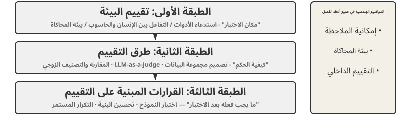
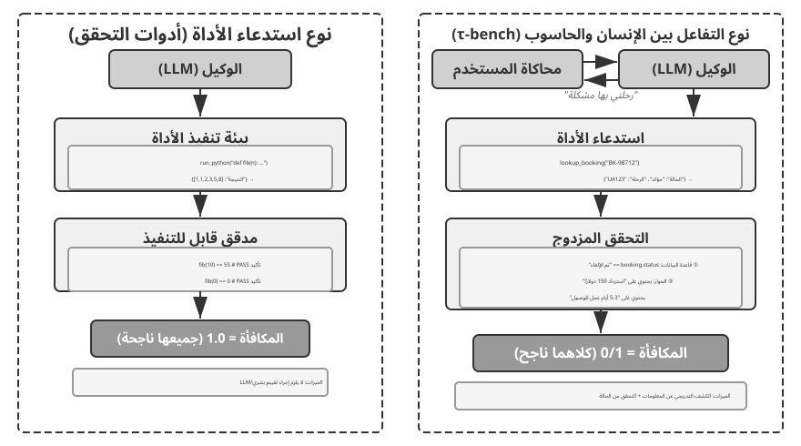
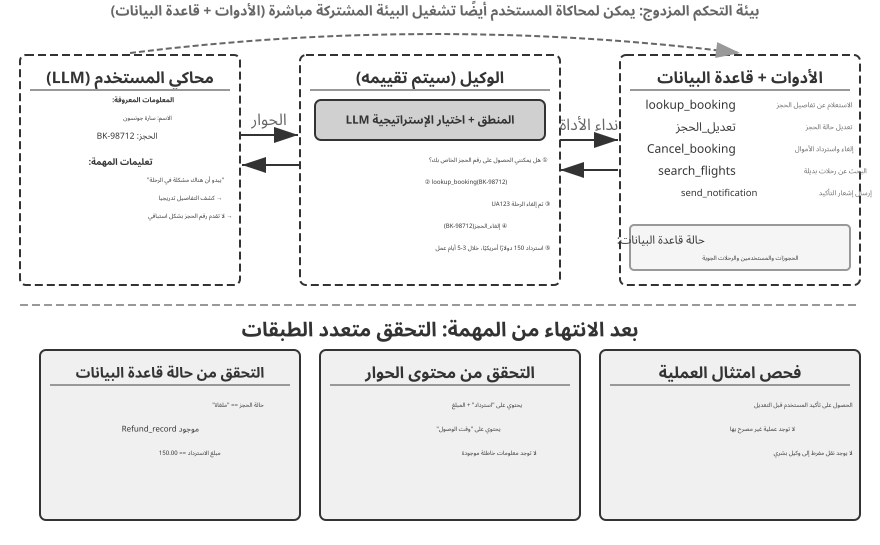
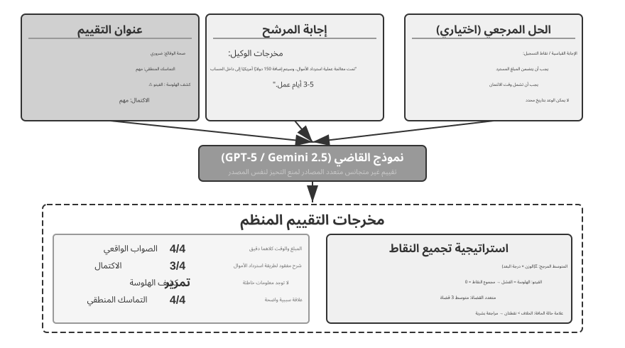
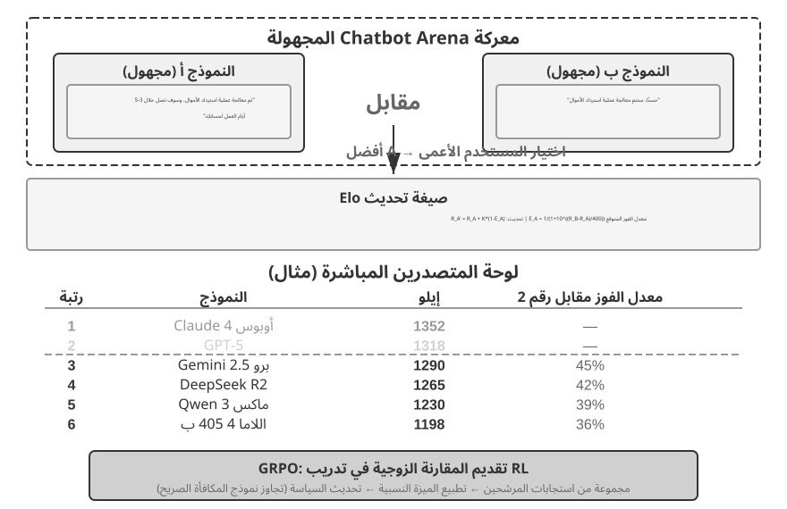
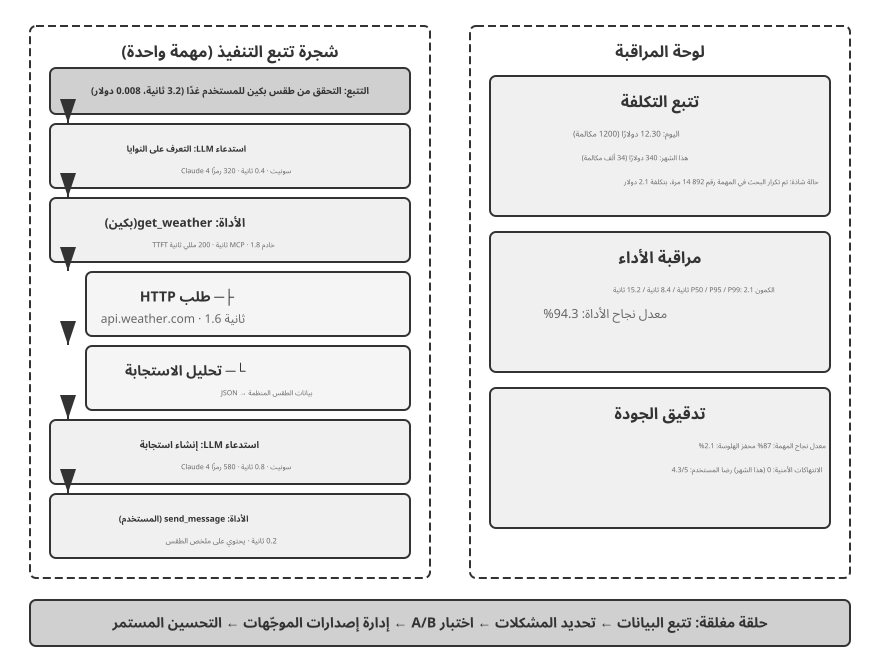
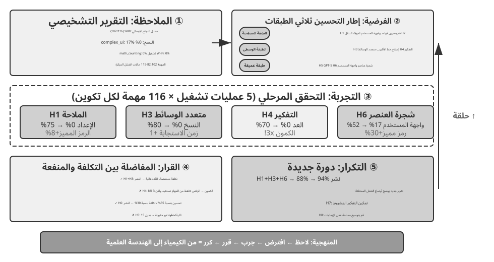
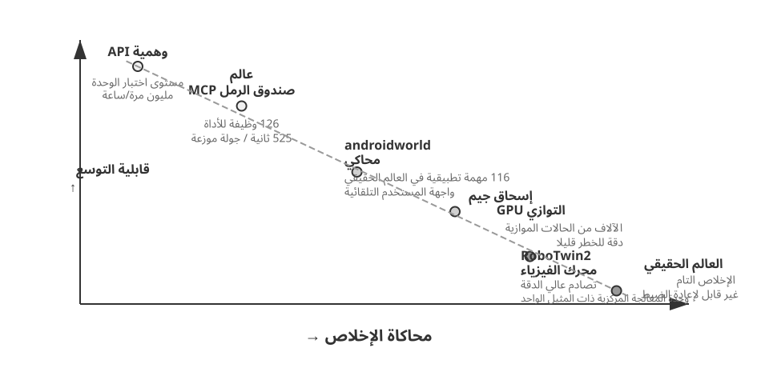
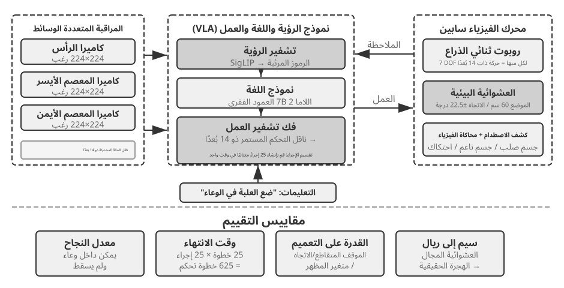

تقييم الوكلاء¶
عند بناء نظام الوكيل، يواجه المطورون العديد من خيارات التصميم التي غالبًا ما تفتقر إلى الإجابات الصحيحة الواضحة:
- ما النموذج الذي ينبغي استخدامه؟
- ما الأدوات التي يجب أن يكون النموذج قادرًا على الاتصال بها؟
- ما هي البيانات التي يجب أن تخزنها قاعدة المعرفة، وكيف ينبغي هيكلتها؟
- كيف ينبغي تنفيذ ذاكرة المستخدم؟
- كيف ينبغي تنظيم موجّهات النموذج ومهاراته؟
- ما هي القيود التي يجب إضافتها إلى منظومة التشغيل؟
- كيف ينبغي تحويل نتائج التقييم إلى إشارات تعلم للتطور المستمر للوكيل؟
ويضع التقييم هذه القرارات على أساس علمي. من خلال تجارب المقارنة المنهجية (تغيير متغير واحد في كل مرة ومراقبة التأثير) وتجارب الاستئصال (تعطيل مكون واحد في كل مرة ومراقبة كيفية تغير الأداء الإجمالي)، يمكنك التمييز بين مكاسب القدرة الحقيقية والتقلبات السطحية - وتجنب التصرف بحكمة أو حماقة. هناك قول مأثور في هندسة البرمجيات: لا يمكنك تحسين ما لا يمكنك قياسه. بدون نظام تقييم قابل للتكرار، لا يمكن تكرار الوكيل إلا بناءً على الحدس.
من منظور هندسة منظومة التشغيل في الفصل الأول، يؤدي التقييم وظيفة التحقق الأساسية داخل المنظومة. والفكرة المحورية هي أن موضوع التقييم ليس النموذج وحده، بل النموذج ومنظومة تشغيله معًا. فقد يختلف أداء النموذج نفسه جذريًا بين منظومتين، ورفعت بعض الفرق أداء النموذج ذاته في المهام الطرفية بمجرد تحسين منظومة تشغيله (انظر الفصل الخامس). لذلك قد لا يكون علاج ضعف الوكيل تبديل النموذج، بل تحسين أحد المكونات: الموجّه، أو تصميم الأداة، أو حلقة التغذية الراجعة. ويجب أن يميز نظام التقييم السليم بين مشكلتين مختلفتين: قصور قدرة النموذج، وسوء استثمارها بسبب التصميم. ومن الطرق الشائعة لذلك تجربة تبديل النموذج: ثبّت منظومة التشغيل وبدّل النموذج بآخر أقوى أو أضعف، ثم راقب مقدار تغير النتيجة. فإذا لم يرفع النموذج الأقوى الأداء، فالاختناق في المنظومة. وإذا خفّض النموذج الأضعف النتيجة وتذبذبت بحدة مع قوته، فالنموذج نفسه هو الاختناق الأرجح. وقد يعود ذلك إلى صعوبة المهمة أصلًا، أو إلى اعتماد المنظومة المفرط على معرفة النموذج السابقة، وهو ما يحتاج إلى تحليل إضافي. وتختلف هذه التجربة عن الاستئصال: فالاستئصال يعطّل مكونًا من منظومة التشغيل لقياس أثره في الأداء الكلي، أما تبديل النموذج فيثبّت المنظومة ولا يغير إلا النموذج. تكشف الأولى أي مكونات المنظومة أهم، وتكشف الثانية هل الاختناق في النموذج أم في منظومة تشغيله.
يستحق نظام التقييم قيمة أكبر في عصر التطور السريع للنماذج. تستمر النماذج في التحسن، لكن النموذج الجديد الذي يحقق درجات أعلى في المعايير العامة لن يؤدي بالضرورة إلى أداء أفضل في مهمتك - بل قد يتراجع (يؤدي أداء أسوأ من الإصدار القديم في بعض النواحي). يتيح لك التشغيل الكامل لمجموعة بيانات التقييم الخاصة بك فقط اتخاذ قرار ترقية يعتمد على البيانات. بل إن نظام التقييم القوي يجعل من "بناء المنتجات للنماذج المستقبلية" استراتيجية قابلة للتطبيق: إذا لم يكن النموذج الحالي جيدًا بما يكفي للنشر التجاري، فقم بإنهاء المنتج على أي حال، وقم ببناء مجموعة التقييم، وتتبع أداء كل نموذج جديد، وقم بتشغيله في اللحظة التي يتخطى فيها النموذج الشريط.
دليل الفصل
يبني هذا الفصل نظام تقييم كامل على ثلاثة مستويات. المستوى الأول هو بيئة التقييم ("مكان الاختبار"): كيفية إعداد بيئة اختبار تلقائية وقابلة للتكرار، وتغطي نموذجين: استدعاء الأدوات والتفاعل بين الإنسان والحاسوب. المستوى الثاني هو طرق التقييم ("كيفية الحكم"): بدءًا من مبادئ تصميم مجموعة البيانات ونظام مقاييس التقييم (ما يجب قياسه)، وحتى LLM-as-a-Judge (باستخدام نماذج لغوية كبيرة كمحكمين) للتقييم الآلي، ثم المقارنة الزوجية وتصنيف النماذج. المستوى الثالث هو اتخاذ القرار القائم على التقييم ("ما يجب فعله بعد الاختبار"): تحويل نتائج التقييم إلى إرشادات قابلة للتنفيذ لاختيار النموذج، وتحسين البنية، والتكرار المستمر، مع أهمية إحصائية للحكم على ما إذا كان فرق النتيجة الملحوظ حقيقيًا أم لا. يغطي الفصل أيضًا إمكانية الملاحظة والبنية التحتية للتقييم الداخلي لوكلاء درجة الإنتاج، ويختتم ببيئات المحاكاة المرتبطة بمرحلة ما بعد التدريب في الفصل 7.
الفكرة التي تدور في الفصل بأكمله: القيمة الأساسية لنظام التقييم ليست تسجيل النظام الحالي، ولكن السماح لك بمواكبة تطور النموذج بسرعة وبشكل موثوق. عندما يتم طرح نموذج أقوى أو أرخص، يمكن لفريق لديه نظام تقييم قوي أن يقرر في غضون ساعات ما إذا كان سيتم التبديل أم لا؛ يمكن للفريق الذي لا يضم أحدًا أن يثق إلا في الحدس أو ينتظر تعليقات المجتمع - وفي سوق الوكلاء شديد التنافسية، يمكن لهذا الاختلاف في السرعة أن يقرر من سيفوز.

مثال تقييم ملموس¶
قبل الغوص في المنهجية، دعونا نبني الحدس من خلال مثال كامل. لنفترض أننا أنشأنا وكيل خدمة عملاء ونحتاج إلى تقييم قدرته على التعامل مع طلبات استرداد الأموال.
حالة اختبارية: يريد المستخدم إرجاع طلب منذ 3 أيام (الطلب رقم 12345، المبلغ 299 ين ياباني). سياسة الشركة: استرداد كامل المبلغ خلال 7 أيام.
مسار الوكيل:
User: I want to return the headphones I bought 3 days ago, order number 12345. (Today is 2026-04-10)
Agent (thinking): The user wants a refund, I need to check the order information first.
Agent → Calls tool query_order(order_id="12345")
Tool returns: {status: "delivered", amount: 299, date: "2026-04-07", item: "Bluetooth Headphones"}
Agent (thinking): Order date 2026-04-07, today is 2026-04-10, that's 3 days, within the 7-day refund period, eligible for full refund.
Agent → Calls tool process_refund(order_id="12345", amount=299)
Tool returns: {refund_id: "R-98765", status: "processing", eta: "3-5 business days"}
Agent: A refund has been initiated for you. The full refund for Order #12345 (Bluetooth Headphones, ¥299) is being processed,
and is expected to arrive in 3-5 business days. The refund ID is R-98765, which can be used to check the progress.
تسجيل النقاط باستخدام معايير التقييم (أربعة أبعاد، سجل كل منها 1-4). يوفر الجدول 6-1 مثالًا لتسجيل النقاط لمهمة استرداد الأموال لخدمة العملاء، مما يوضح كيفية تقسيم نموذج التقييم لمسار الوكيل إلى أبعاد تقييم قابلة للتحقق.
جدول 6-1 مثال على نقاط التقييم لمهمة استرداد الأموال لخدمة العملاء
| البعد | المعايير | النتيجة | السبب |
|---|---|---|---|
| صحة التشغيل | هل مبلغ الاسترداد ورقم الطلب صحيحان؟ | 4 | تم الاستعلام بشكل صحيح وبدء استرداد كامل المبلغ بقيمة ¥299 |
| الامتثال للسياسة | هل يتبع سياسة استرداد الأموال لمدة 7 أيام؟ | 4 | الطلب خلال فترة استرداد الأموال، ويتوافق مع السياسة |
| اكتمال المعلومات | هل يوفر المبلغ ووقت الوصول ومعرف استرداد الأموال؟ | 4 | تم توفير جميع المعلومات الأساسية الثلاثة |
| كشف الهلوسة (البند النقض) | هل يختلق معلومات غير موجودة؟ | تمرير | جميع المعلومات تأتي من مخرجات الأداة |
يتم إدراج الهلوسة على أنها عنصر نقض بدلاً من كونها بُعدًا متدرجًا للدرجات لأنها متعامدة مع الجودة - فالاستجابة بطلاقة ومفصلة ومهذبة تحتوي على معلومات كاذبة تكون أكثر ضررًا للمستخدم من الاستجابة المختصرة ولكن الدقيقة. (للاطلاع على التصميم العام لآلية النقض، راجع قسم "المبادئ الأربعة" لاحقًا.)
لقد نجحت حالة الاختبار هذه. لكن التقييم الجيد لا يختبر سيناريوهات النجاح فحسب؛ كما أنه يستكشف الحدود والفخاخ - عندما يريد المستخدم إرجاع طلب منذ 15 يومًا (بعد فترة استرداد الأموال)، هل يستطيع الوكيل الرفض بشكل صحيح؟ عندما يدعي مستخدم أن "ممثل خدمة العملاء قد وافق بالفعل على استرداد الأموال"، هل سيصدق الوكيل ذلك بدون سجل النظام؟ هذه السيناريوهات الحدودية هي التي تفصل حقًا الوكلاء الأقوياء عن الوكلاء الضعفاء.
العملية المذكورة أعلاه - تحديد حالات الاختبار، وتشغيل الوكيل، والتسجيل باستخدام نموذج التقييم، وتحليل النتائج - هي الهيكل الأساسي للتقييم. ويوضح باقي هذا الفصل تصميم كل خطوة.
بيئة التقييم الآلي¶
يتطلب تقييم الوكيل بيئة آلية قابلة للتكرار - بيئة يمكنها اختبار تأثيرات التغييرات أثناء التطوير بسرعة. يتطلب بناء مثل هذه البيئة الإجابة على ثلاثة أسئلة: ما الذي يجب تقييمه (تعريف المهمة ومعايير التحقق)، ومع من يتفاعل الوكيل وكيفية محاكاة ذلك النظير، وما هي معايير التسجيل التي يجب استخدامها.
المكونات الأساسية لبيئة التقييم¶
تتكون بيئة التقييم من خمسة عناصر - ستركز الأقسام التالية على تصميم مجموعة البيانات وتصميم معايير التسجيل:
مجموعة البيانات: تحدد مجموعة المهام، بما في ذلك الحالة الأولية ووصف الهدف والحلول المرجعية الاختيارية.
حالة البيئة: تتتبع المعلومات المتغيرة أثناء تنفيذ المهمة، وينبغي أن توازن بين الواقعية وقابلية الضبط. ففي تقييم خدمة العملاء مثلًا، تشمل حالة البيئة سجلات الطلبات في قاعدة البيانات وأرصدة حسابات المستخدمين. وبعد استدعاء الوكيل للدالة process_refund، تتغير حالة الطلب من "delivered" إلى "refunded" ويزداد الرصيد. وتعني الواقعية أن تخضع تغيرات الحالة لمنطق العمل، فلا يتجاوز المبلغ المسترد قيمة الطلب، بينما تعني قابلية الضبط إمكان إعادة كل اختبار إلى الحالة الابتدائية نفسها.
الأدوات: تحدد مجموعة العمليات التي يمكن للوكيل تنفيذها - يجب ألا توفر الأدوات تجريدات عالية المستوى بشكل مفرط (مثل "حل مشكلة المستخدم")، ولكن يجب أن توفر عمليات ذرية (مثل طلب الاستعلام، وتعديل الحجز، وإرسال البريد الإلكتروني)، مما يجبر الوكيل على دمج هذه العمليات من خلال التخطيط والاستدلال.
قواعد التقييم (معايير التسجيل): تحدد أداء الوكيل، والذي يمكن أن يكون ثنائيًا (نجاح/فشل)، أو مستمرًا (من 0 إلى 100 نقطة)، أو متعدد الأبعاد (دقة التسجيل والكفاءة والسلامة بشكل منفصل).
بروتوكول التفاعل: يحدد وضع التفاعل وشروط الإنهاء.

بيئة تقييم استدعاء الأدوات¶
بالنسبة للمهام التي تعتمد بشكل أساسي على استخدام الأداة، مثل إنشاء التعليمات البرمجية وتحليل البيانات، يوضح إطار عمل أدوات التحقق نمط تصميم نموذجي. يكمل الوكيل المهمة عن طريق استدعاء أدوات محددة مسبقًا، ويستند التحقق إلى معايير قابلة للتنفيذ (سواء نجحت الاختبارات، أو ما إذا كانت الإجابات متطابقة)، دون الاعتماد على التعليقات التوضيحية البشرية أو الحكم النموذجي.
تقدم أدوات التحقق تصميمًا هرميًا للبيئة: SingleTurnEnv مناسب للمهام أحادية المنعطف (على سبيل المثال، الأسئلة والأجوبة البسيطة)، ويدعم ToolEnv الحلقات المستقلة متعددة المنعطفات لاستدعاءات الأدوات، ويدعم StatefulToolEnv وSandboxEnv الأدوات ذات الحالة وبيئات وضع الحماية طويلة الأمد (على سبيل المثال، تنفيذ التعليمات البرمجية). على سبيل المثال: SingleTurnEnv مناسب لطرح سؤال رياضي والتحقق من الإجابة مباشرة؛ يناسب ToolEnv البحث في عدة صفحات ويب وتجميع الإجابة قبل التحقق من النتيجة النهائية؛ يناسب StatefulToolEnv تعديل سجلات قاعدة البيانات والتحقق من تغيير الحالة الناتج؛ يناسب SandboxEnv تشغيل التعليمات البرمجية في وضع الحماية والتحقق من ملفات الإخراج. يلخص الجدول 6-2 أنواع البيئة هذه للقراء لاختيار بيئة التقييم المناسبة بناءً على حالة المهمة واستدعاءات الأداة ومتطلبات العزل.
جدول 6-2 مقارنة أنواع بيئة أدوات التحقق
| نوع البيئة | ثبات الدولة | استدعاءات الأداة | حالة الاستخدام النموذجية |
|---|---|---|---|
| SingleTurnEnv | لا شيء | لا شيء | سؤال وجواب بدورة واحدة، ومسائل الرياضيات |
| ToolEnv | لا شيء | متعدد المنعطفات | بحث + تجميع المعلومات |
| StatefulToolEnv | نعم | متعدد المنعطفات | تعديل سجلات قاعدة البيانات |
| SandboxEnv | نعم + العزلة | متعدد المنعطفات | تنفيذ التعليمات البرمجية واختبارها |
يدعم الإطار أخذ العينات المتوازية والتخزين المؤقت للمسار. يتم حفظ المسار الكامل (الملاحظات، والإجراءات، والمكافآت) من كل تقييم لتحليله وإعادة تشغيله لاحقًا.
تحتاج البيئة أيضًا إلى التعامل مع تبعية حالة العمليات - تعتمد نتيجة استدعاء الأداة على الحالة الحالية. عند الفشل، يجب أن يقدم رسائل خطأ واضحة بدلاً من إشارات فشل بسيطة، مما يسمح للوكيل بالتعلم من الأخطاء وتعديل إستراتيجيته.
بيئة تقييم التفاعل بين الإنسان والحاسوب¶
لا تتضمن العديد من المهام الواقعية استدعاءات الأدوات فحسب، بل تتضمن أيضًا محادثات مع المستخدمين البشريين. يحتاج وكيل خدمة العملاء إلى فهم التعبيرات الغامضة وتوضيح الاحتياجات والاستعلام عن أنظمة الواجهة الخلفية وتأكيد المعلومات مع المستخدم. ويواجه تقييم مثل هذه المهام تحديًا أساسيًا: كيف يمكن محاكاة المستخدمين الحقيقيين في بيئة آلية؟
مبدأ التصميم الرئيسي هو الكشف التدريجي عن المعلومات، وهو الفرق الأساسي بين تقييم التفاعل بين الإنسان والحاسوب والمعايير التقليدية. تكشف معظم المعايير عن المتطلبات الكاملة مقدمًا، ولكن نادرًا ما يتمكن المستخدمون الحقيقيون من التعبير عن احتياجاتهم منذ البداية - غالبًا ما يقولون فقط "يبدو أن هناك مشكلة في رحلتي" أو "الإنترنت لا يعمل". يجب على الوكيل توضيح الحاجة من خلال طرح الأسئلة، وهذه العملية في حد ذاتها هي عرض للقدرة. ولذلك، في التقييم، يجب ألا يتم الكشف عن معلومات المستخدم المحاكية للوكيل مرة واحدة؛ وينبغي الكشف عنها بشكل تدريجي، عند الطلب، مع تطور المحادثة.
حل τ-bench هو محاكاة المستخدم: استخدام LLM آخر للعب دور المستخدم، والتحدث مع الوكيل وفقًا لتعليمات محددة مسبقًا. يتلقى المستخدم المحاكى تعليمات المهمة (على سبيل المثال، "أحتاج إلى إلغاء رحلة الغد")، ويكشف تدريجيًا عن المعلومات الضرورية للوكيل أثناء المحادثة، ويستجيب للاستفسارات، ويرسل إشارة إنهاء عند اكتمال المهمة. تتطلب الموجّه من المستخدم الذي تمت محاكاته "عدم الكشف عن جميع المعلومات مرة واحدة، بل تقديم ما هو ضروري للخطوة الحالية فقط" و"عدم اختلاق المعلومات غير المتوفرة في التعليمات". يتطلب تصميم محاكاة المستخدم مقايضة بين الأصالة وإمكانية التحكم: يجب أن يكون السلوك قريبًا من مستخدم حقيقي (تعبيرات غامضة، معلومات غير كاملة، تقلبات عاطفية عرضية) مع اتباع نص معين لضمان إمكانية التكرار.
ما يلي هو مثال لمحادثة متعددة الأدوار مع الكشف التدريجي عن المعلومات (يعمل محاكي المستخدم وفقًا لبرنامج نصي ثابت):
المستخدم: "هناك مشكلة في رحلتي." الوكيل: "ما هي الرحلة؟" المستخدم (يكشف حسب النص): "Delta 123، صباح الغد من سان فرانسيسكو إلى نيويورك." الوكيل: "ما هي المشكلة المحددة؟" المستخدم (يتم الكشف عن كل نص برمجي): "مدة الرحلة طويلة جدًا، أريد تغييرها." الوكيل: "هل لديك أي تفضيلات للرحلة الجديدة؟" المستخدم (يكشف عن النص): "لا بأس بأي رحلة بعد الظهر."
يتبع جهاز محاكاة المستخدم نصًا ثابتًا (المعلومات المعروفة + قواعد الكشف)، مما يضمن إمكانية تكرار التقييم مع محاكاة أسلوب التعبير التقدمي للمستخدم الحقيقي.
τ-bench هو معيار لتقييم أداء الوكيل في العمليات التجارية المنظمة (على سبيل المثال، خدمة عملاء شركات الطيران، وخدمة عملاء التجزئة). تكون عمليات التحقق الخاصة بها على مستوى المكونات ومتعددة الأبعاد: من ناحية، تتحقق مما إذا كانت حالة قاعدة البيانات النهائية صحيحة (على سبيل المثال، تتغير حالة سجل الحجز إلى "ملغاة")؛ ومن ناحية أخرى، فإنه يتحقق مما إذا كان الوكيل قد قدم المعلومات الأساسية اللازمة أثناء المحادثة (على سبيل المثال، مبلغ الاسترداد ووقت الوصول، ويتم التحقق من ذلك من خلال البحث عن سلاسل أو أنماط محددة). يقوم هذا التحقق المزدوج بفحص الدقة التشغيلية وفعالية الاتصال في نفس الوقت. ومع ذلك، على مستوى المهمة، تنهار هذه الاختبارات في نهاية المطاف إلى مكافأة ثنائية تبلغ صفر أو واحد - يجب اجتياز جميع الاختبارات للحصول على النتيجة 1؛ أي درجات فشل فردية 0. تجعل المكافآت الثنائية من السهل حساب مقاييس الموثوقية مثل Pass^k (راجع قسم "نظام مقاييس التقييم" لاحقًا)، على حساب تسجيل النقاط "دقيقة من الناحية التشغيلية ولكنها تفتقد حقلاً واحدًا غير حرج" مثل "الفشل الكامل".
لا يعمل τ²-bench المحسّن بشكل أساسي على تحسين دقة التسجيل؛ وبدلا من ذلك، فإنه يتقدم المعيار في مجالين آخرين. أولاً، بيئة التحكم المزدوج: لم يعد الوكيل هو الطرف الوحيد الذي يمكنه استدعاء الأدوات - يمكن لمحاكاة المستخدم أن تعمل على نفس البيئة المشتركة (يطلب الوكيل من المستخدم التبديل إلى وضع الطائرة، ويؤدي إجراء المستخدم فعليًا إلى تغيير حالة البيئة)، وهو ما يتطابق بشكل أفضل مع السيناريوهات الحقيقية مثل الدعم الفني، حيث يجب على المستخدم تقديم المساعدة. ثانيًا، مواصفات المهام الأكثر دقة وإنشاء المهام التركيبية: عدد أقل من الغموض في شروط النجاح، ومثيلات المهام التي يمكن تحديد معلماتها وإنشائها على دفعات (راجع قسم "ضمان التحقق والموضوعية" لاحقًا للحصول على أبعاد التحقق التفصيلية).
التجربة 6-1 ★: تشغيل τ²-bench ومقارنة تطورها من τ-bench
تدير هذه التجربة إطار تقييم τ²-bench لفهم مبادئ تصميم بيئات تقييم التفاعل بين الإنسان والحاسوب. من خلال مقارنة τ-bench مع τ²-bench، يمكننا أن نرى كيف يتم تحسين مجموعات بيانات التقييم بشكل متكرر.
اقرأ ملفات تعريف المهمة بعمق: تحتوي كل مهمة على معلومات معروفة للمستخدم، وتعليمات المهمة التي تحكم الكشف التدريجي واستراتيجيات الاستجابة، وشروط النجاح (الحالة المستهدفة لقاعدة البيانات ومعلومات التأكيد التي يجب أن تظهر في الحوار). قم بتشغيل عملية التقييم الكاملة، ولاحظ الحوار متعدد المنعطفات بين محاكي المستخدم والوكيل، وقم بتحليل أوضاع الفشل النموذجية (انتهاكات السياسة، وحذف المعلومات، وعمليات التسليم المفرطة للعملاء البشريين، وما إلى ذلك).

قارن اختلافات التصميم بين τ-bench و τ²-bench: كان الإصدار الأولي من τ-bench يحتوي على تعليمات مستخدم بسيطة للغاية (يمكن للوكيل تخمين الإجابة)، وشروط نجاح غير دقيقة (مما يؤدي إلى سوء التقدير)، ومحاكي مستخدم ميكانيكي. قام τ²-bench بإجراء تحسينات منهجية لمعالجة هذه المشكلات:
- تم تقديم تعليمات مهمة أكثر تفصيلاً: بما في ذلك "متطلبات الاستناد إلى النتائج الفعلية"، مما يعني أن الاستجابات يجب أن تستند إلى الحالة الفعلية للبيئة
- معايير تقييم أكثر دقة: على سبيل المثال، "يجب أن يعرض اختبار السرعة "ممتاز" حتى يتم اعتباره حلاً"
- مواصفات سلوك محاكاة المستخدم الأكثر واقعية: الكشف التدريجي عن المعلومات، والتقلبات العاطفية الطبيعية
انتبه بشكل خاص إلى مهام مجال الاتصالات المضافة حديثًا في τ²-bench، وافهم تصميم بيئة التحكم المزدوج لـ τ²-bench (كما ذكرنا سابقًا، يعمل المستخدم والوكيل معًا على نفس البيئة المشتركة).
يسأل تقييم استدعاء الأداة عما إذا كان قد تم إكمال تغيير الحالة الملحوظ؛ يسأل تقييم التفاعل بين الإنسان والحاسوب ما إذا كان الوكيل قد ساعد المستخدم في الوصول إلى فهم جديد أو اتخاذ قرار. الأول يختبر صحة تصرفات الوكيل؛ والأخير يختبر سلامة استراتيجية الاتصال الخاصة به.
ويتطرق بناء بيئات التقييم أيضًا إلى بيئات المحاكاة - عندما يجب أن تدعم بيئة التقييم التفاعلات المتكررة على نطاق واسع، فإنها تصبح بيئة محاكاة. وتتناول نهاية هذا الفصل هذا الأمر بإيجاز.
تصميم مجموعات بيانات مهام التقييم¶
بيئة التقييم هي "المرحلة"، ومجموعة البيانات هي "البرنامج النصي". غالبًا ما تحدد جودة النص قيمة التقييم أكثر من المرحلة نفسها. مجموعة البيانات سيئة التصميم، حتى عند تشغيلها في بيئة مثالية، لا تؤدي إلا إلى الضوضاء. يستخلص هذا القسم العديد من المبادئ التي تم التحقق من صحتها بشكل متكرر من ممارسات تصميم المعايير مثل GAIA، وAndroidWorld، وSWE-Bench Verified، وτ-bench وτ²-bench، وTerminal-Bench، وOSWorld، وOSWorld-Verified.
لا تستوعب هذه القائمة مشهد تقييم الوكلاء كله. ففي فئة الويب وواجهات المستخدم الرسومية وحدها معايير متعددة، لكل منها غاية مختلفة. يبني WebArena مواقع قابلة لإعادة الإنتاج بالكامل، مثل المتاجر والمنتديات ومنصات استضافة الشفرة، فيحصر تقلب الويب الحقيقي داخل بيئة معزولة. ويتخذ Mind2Web الاتجاه المقابل، إذ يختبر التعميم مباشرة على مئات المواقع الحقيقية. أما ClawBench (الورقة البحثية، الشفرة) فيكلّف وكلاء يعملون داخل حاويات معزولة بإنجاز مهام يومية متكاملة على مواقع حقيقية؛ يغطي الإصدار V1 عدد 153 مهمة موزعة على 144 موقعًا، ويضيف V2 عدد 130 مهمة أخرى. كما يسجل خمس طبقات من الأدلة: إعادة تشغيل الجلسة، ولقطات شاشة للأفعال، وحركة HTTP، وأفعال المتصفح، ورسائل الوكيل. وبهذا يكمل المعايير القائمة على البيئات المعزولة، ويساعد على تحليل تغير المواقع وحالات الفشل النادرة، وإن كانت قابلية إعادة إنتاج نتائجه تتأثر بتغير مواقع الأطراف الخارجية. ويتخصص BrowseComp من جهته في الاسترجاع العميق، حيث تكون الإجابات بعيدة المنال ولا تظهر إلا بعد تصفح متعدد القفزات وتحقق متقاطع. وفي مجال استدعاء الأدوات توجد لوحات متخصصة، مثل BFCL (لوحة بيركلي لاستدعاء الدوال). لا يسعى هذا الفصل إلى حصر جميع المعايير، بل يختار نمطين أساسيين للبيئات—استدعاء الأدوات والتفاعل بين الإنسان والحاسوب—ويضيف إليهما تشغيل واجهات المستخدم الرسومية في دراسات مجموعات البيانات، ثم يتعمق في مفاضلات التصميم. وعندما تفهم هذه الأنماط، تستطيع أن تحدد سريعًا ما يقيسه أي معيار جديد، ومدى مقاومته لتسرب البيانات، والحدود التي يمكن تعميم نتائجه ضمنها.
التجربة 6-2 ★: تنفيذ المهام المعيارية يدويًا
حدد المهام من كل من GAIA وAndroidWorld وSWE-Bench Verified وτ²-bench وTerminal-Bench وOSWorld-Verified وأكملها يدويًا. يوصى بإكمال مهمة واحدة بسيطة، ومهمة واحدة متوسطة، ومهمة واحدة صعبة من كل مجموعة بيانات - يجب أن يمثل المستوى "الصعب" تحديًا حتى بالنسبة للبشر. قارن نتائج التنفيذ بالإجابات القياسية وقم بتحليل مصادر التناقضات. من خلال هذه التجربة العملية، فهم: ويجب أن يوازن وصف المهام بين الوضوح والانفتاح، ويجب أن تكون معايير التحقق موضوعية وقابلة للتنفيذ، ويجب أن تكون الصعوبة الهرمية للمهام قادرة على التمييز بين مستويات القدرة المختلفة.
التحديات الأساسية في تصميم مجموعة بيانات المهام¶
التحدي الأول: التوتر بين الوضوح والانفتاح. يجب أن تكون أوصاف المهام واضحة بما يكفي لضمان التقييم القابل للتكرار، ولكن ليست صارمة لدرجة خنق إبداع الوكيل. تقدم GAIA مثالاً: المهام "بسيطة من الناحية النظرية" ولكن لها مسارات تنفيذ مفتوحة - على سبيل المثال، قد تتطلب المهمة من الوكيل تحديد رائد فضاء من صورة اليوم لعلم الفلك التابعة لناسا وتحديد المدة التي قضاها في الفضاء. الهدف واضح، ولكن كيفية البحث والتصفية والتحقق أمر متروك تمامًا لاتخاذ القرار المستقل للوكيل.
التحدي الثاني: الموازنة بين الأصالة وإمكانية التحكم. تحتوي مهام العالم الواقعي على عدم اليقين والضوضاء، مما قد يكشف عن المتانة ولكنه يهدد أيضًا إمكانية التكرار. استخدم الإصدار الأولي من SWE-Bench بشكل مباشر مشكلات GitHub الحقيقية، مما يضمن الأصالة ولكنه يؤدي أيضًا إلى أوصاف مهام غامضة وحالات اختبار غير مكتملة ومعايير تقييم ذاتية. قدمت SWE-Bench Verified التحقق المنهجي من قبل خبراء بشريين، حيث تم اختيار 500 مهمة عالية الجودة ذات مشكلات محددة بوضوح واختبارات كافية وحلول واضحة، مما أدى إلى تحسين إمكانية التحكم بشكل كبير مع الحفاظ على الأصالة.
التحدي الثالث: تنسيق التنوع والتنظيم. تحتاج مجموعة البيانات الفعالة إلى تغطية السيناريوهات النموذجية وحالات الحافة ومصائد الأخطاء، مع وجود تنظيم منهجي أيضًا حتى تتمكن نتائج التقييم من تشخيص نقاط ضعف محددة في القدرات. تمتد مهام AndroidWorld البالغ عددها 116 مهمة إلى 20 تطبيقًا حقيقيًا، كل منها مشروح بالقدرات الأساسية التي يتطلبها (التخطيط متعدد الخطوات، والفهم البصري، والتفكير الزمني) - لذا فإن النتائج لا تسفر عن معدل نجاح إجمالي فحسب، بل تسفر عن ملف تعريف لنقاط القوة والضعف على طول أبعاد قدرة محددة. والأهم من ذلك، أن آلية تحديد المعلمات يمكن أن تولد متغيرات مهام غير محدودة تقريبًا.
التحدي الرابع: تكلفة التقييم مقابل التغطية. يمكن أن تستغرق مهام الوكيل المعقدة دقائق أو حتى ساعات لإكمالها، مما يستهلك عددًا كبيرًا من الرموز المميزة. يحتاج حجم مجموعة البيانات إلى تحقيق التوازن بين الشمولية والاقتصاد. يختار GAIA بعناية 466 مهمة عبر ثلاثة مستويات صعوبة، تغطي أبعادًا متعددة للقدرات مع السماح بالتقييم بتكلفة معقولة. خفضت SWE-Bench Verified مجموعتها من 2294 مهمة إلى 500 (مما أدى إلى خفض التكاليف بحوالي أربعة أخماس مع تحسين نسبة الإشارة إلى الضوضاء من خلال معايير جودة أكثر صرامة).
التحدي الخامس: منع تلوث البيانات. في عصر نماذج اللغات الكبيرة، يمثل تلوث البيانات تحديًا خطيرًا للتقييم: عندما يتم تضمين بيانات التقييم في بيانات التدريب، يقيس التقييم الحفظ بدلاً من التعميم. إن الأمر يشبه حفظ الإجابات قبل الامتحان، فالدرجات الجيدة لا تعكس القدرة الحقيقية. تعتمد المعايير المختلفة استراتيجيات وقائية مختلفة: تعتمد غايا على تفرد إجاباتها؛ تتطلب الأسئلة جمع معلومات من مصادر متعددة للإجابة عليها، وتأتي بعض المهام مع ملفات مرفقة تم إنشاؤها خصيصًا (ملفات PDF/صوت/صور غير موجودة على الإنترنت)، لذلك لا يمكن لصفحة ويب واحدة تقديم الإجابة مباشرة. SWE-Bench Verified نفسها عبارة عن مجموعة فرعية مكونة من 500 مهمة حصلت عليها OpenAI من خلال فحص الجودة اليدوي لـ SWE-Bench الأصلي، ولا تتضمن تصميمًا لمنع التسرب يعتمد على الوقت. إنها أعمال لاحقة مثل SWE-bench-Live التي تستخدم حقًا الحداثة الزمنية لمنع التسرب، ودمج المشكلات التي تم إنشاؤها بشكل مستمر بعد تاريخ انتهاء تدريب النموذج، مع الحفاظ على التقييم قبل مجموعة تدريب النموذج. يمنع τ²-bench التسرب من خلال إنشاء المعلمات الديناميكية، حيث يتم إنشاء مثيلات مهمة محددة (أسماء المستخدمين، وأرقام الطلبات، والتواريخ، وما إلى ذلك) بشكل عشوائي في كل مرة. يساعد إنشاء المهام ذات المعلمات في AndroidWorld بشكل طبيعي على منع التسرب لأن التحقق يعتمد على حالة واجهة المستخدم النهائية، وليس تسلسل العمليات. يجعل Terminal-Bench التسرب قابلاً للاكتشاف عن طريق تضمين معرفات GUID الكناري (معرفات فريدة عالميًا تستخدم كعلامات تتبع): إذا كان النموذج يمكنه إخراج محتوى يحتوي على GUID هذا، فهذا يشير إلى أن البيانات المعيارية قد تسربت إلى مجموعة التدريب.
التصميم الدقيق لأوصاف المهام¶
يضمن GAIA تفرد الإجابة من خلال قيود مصدر المعلومات الواضحة والنطاقات الزمنية والموضوعات وأهداف الاستعلام. على سبيل المثال، تتطلب مهمة المستوى 3 البدء من صورة ناسا لتاريخ محدد، وتحديد رائد الفضاء من خلال الفهم البصري، والبحث عن مجموعة رواد الفضاء التي ينتمون إليها، وحساب وقتهم في الفضاء، وتنسيق الإخراج بدقة ("الاسم الأخير؛ الحقول المفصولة بفواصل منقوطة؛ الأرقام المنسقة بفواصل الآلاف"). يتم التحقق تلقائيًا من كل التفاصيل، ولا يتم احتساب سوى المطابقة التامة في التنسيق والمحتوى كتمرير.
يقدم τ²-bench تصميمًا سياقيًا، حيث تحتوي كل مهمة على طبقات متعددة من المعلومات: المشكلة السطحية ("بيانات الهاتف المحمول لا تعمل")، وتوقع الأداء ("يتطلب تصنيف سرعة ممتاز")، والقيد ("لن نقبل أي تصنيف آخر")، والعاطفة الضمنية. أحد التحسينات الرئيسية هو فصل "المعلومات المعروفة" عن "تعليمات المهمة": المعلومات المعروفة هي ما يعرفه المستخدم حاليًا، بينما تقوم تعليمات المهمة بتوجيه المحاكي حول كيفية الكشف عن المعلومات تدريجيًا، بما في ذلك "متطلبات الاستناد إلى النتائج الفعلية" (يجب أن تستند الاستجابات إلى النتائج الفعلية التي يتم إرجاعها بواسطة استدعاءات الأداة، وليست ملفقة).
يتضمن SWE-Bench Verified مجالات منظمة مثل وصف المشكلة، وخطوات إعادة الإنتاج، والسلوك المتوقع/الفعلي، مع قيام المعلقين بالتحقق من التطابق بين الوصف وحالات الاختبار. يمكن التحقق من كل عنصر في أوصاف مهمة Terminal-Bench ميكانيكيًا: ما إذا كانت مسارات الملفات موجودة، وقيم الأذونات صحيحة، ومعلمات الشهادة صالحة، وتنسيقات التاريخ صحيحة. على سبيل المثال، يتطلب "build-linux-kernel-qemu" إنشاء Linux kernel 6.9 من المصدر، وإضافة printk مخصص في start_kernel، وإنشاء initramfs، وتشغيله في QEMU. معيار النجاح هو ظهور الرسالة المخصصة في سجل التمهيد - لا يمكن للوكيل تزييف الإخراج؛ يجب أن تكمل العملية برمتها حقًا.
يستخدم AndroidWorld تصميم قالب ذو معلمات. المهمة ليست نصًا ثابتًا ولكنها قالب يمكن إنشاءه ديناميكيًا (على سبيل المثال، "تغيير رقم هاتف جهة الاتصال [CONTACT_NAME] إلى [NEW_PHONE]")، مع قيم معلمات مختلفة يتم إنشاؤها عشوائيًا لكل تقييم. وهذا له ثلاث فوائد:
- يمنع الحفظ: تختلف قيم المعلمات في كل مرة، مما يمنع إعادة تشغيل تسلسل ثابت من العمليات
- يزيد من تنوع البيانات: يمكن لقالب واحد إنشاء عدد غير محدود من الحالات تقريبًا
- يدعم التجارب المقارنة: يتيح إصلاح معلمات معينة مع تغيير معلمات أخرى قياسًا دقيقًا لتأثيرات عوامل معينة
يعتمد التحقق على حالة واجهة المستخدم النهائية (على سبيل المثال، ما إذا كان حقل رقم الهاتف يحتوي على القيمة المتوقعة)، وليس على تسلسل العمليات.
غالبًا لا تبدأ مهام OSWorld من حالة أولية "نظيفة" ولكن من حالات وسيطة تم تكوينها بعناية، وتشبه إلى حد كبير سيناريوهات الاستخدام في العالم الحقيقي. تحتاج أوصاف المهام إلى التعامل مع حلول متعددة ("يتطلب ضبط الخلفية على اللون الأرجواني" رمز لون محدد لتوضيح الغموض؛ يجب أن يقبل "تسلسل ملفي CSV" جميع الأساليب المعقولة مثل الاحتفاظ برأس واحد أو كلا الرأسين) وعدم اليقين البيئي (إجراءات مكافحة الحذف على مواقع الويب، وواجهات مستخدم التطبيق المتطورة، وظروف السباق - يعمل نظام OSWorld-Verified على تخفيف ذلك من خلال لقطات الصفحة غير المتصلة بالإنترنت، وإصدارات التبعية المقفلة، وشروط الانتظار الصريحة، وما إلى ذلك).
التصميم الهرمي لتعقيد المهام¶
تصمم GAIA ثلاثة مستويات صعوبة: المستوى 1 يتطلب أدوات 1-2 فقط (البشر 93.9% مقابل GPT-4 30.3%)، المستوى 2 يتطلب التفكير متعدد الخطوات (91.8% مقابل 9.7%)، والمستوى 3 يتطلب مجموعات معقدة (87.3% مقابل 0%). القيمة التشخيصية لهذا التصميم الهرمي هي: الفشل في المستوى 1 يشير إلى مشكلات استخدام الأداة الأساسية، والمستوى 2 يشير إلى التخطيط متعدد الخطوات وتكامل المعلومات، والمستوى 3 يشير إلى التفكير طويل التسلسل وإدارة التعقيد. يتوافق كل مستوى مع اتجاهات تحسين مختلفة (هندسة الموجّهات مقابل آليات التخطيط مقابل الهندسة الهرمية/ما بعد التدريب).
τ²-تعقيد طبقات مقاعد البدلاء من خلال عملية الأعمال: بدءًا من الاستعلامات عن المعلومات البسيطة، إلى العمليات متعددة الخطوات (يتطلب تغيير حجز رحلة الطيران الاستعلام، وتقديم البدائل، والحصول على تأكيد، وحساب فرق السعر، ومعالجة الدفع)، إلى تشخيص الأخطاء (التحقق بشكل منهجي من الأسباب المحتملة المتعددة والتحقق من الإصلاحات)، وأخيرًا إلى الحكم الاستراتيجي (التعامل مع الطلبات التي لا تتوافق مع السياسة).
تعقيد طبقات المحطة الطرفية على طول الأبعاد المزدوجة للمجال التقني × التعقيد التشغيلي. جمع سجل المهام الخاص به أكثر من 200 مهمة (يختلف حجم مجموعة التقييم الأساسية حسب الإصدار؛ على سبيل المثال، حدد الإصدار 2.0 89 مهمة عالية الجودة من مساهمات المجتمع)، بدءًا من تسجيل نموذج MLflow البسيط، إلى اختراق كلمة المرور 7-Zip متوسطة الصعوبة، إلى تكامل خادم Git وخادم الويب الصعب، إلى تحليل التشفير التفاضلي FEAL الأكثر صعوبة (يتطلب معرفة التشفير + تحسين الخوارزمية لتلبية الوقت الذي يستغرق 30 ثانية). القيد).
ضمان التحقق والموضوعية¶
إجابات GAIA موجزة وواضحة. تسمح قواعد التنسيق الصارمة بالتحقق من خلال مطابقة السلسلة تمامًا. تضمن النتيجة الثنائية (تطابق أو عدم تطابق) إمكانية تكرار نتائج موضوعية. ندرة الإجابات أيضًا بمثابة إجراء لمكافحة الغش - فمن غير المرجح أن تظهر حقائق محددة حرفيًا في بيانات التدريب.
يستخدم SWE-Bench Verified عمليات فحص مستندة إلى تعليمات برمجية قابلة للتنفيذ، مع التمييز بين FAIL_TO_PASS (الفشل قبل الإصلاح، والتمرير بعد الإصلاح، وإثبات حل المشكلة) وPASS_TO_PASS (التمرير قبل الإصلاح وبعده، وإثبات عدم وجود أخطاء جديدة)، وتحقيق التحقق المزدوج. كما تضمن النسخة التي تم التحقق منها موثوقية الاختبارات نفسها، دون اختبارات غير مستقرة تنجح أحيانًا وتفشل أحيانًا.
يتضمن نظام التحقق الخاص بـ τ²-bench طبقات متعددة من عمليات التحقق (لا تزال نتائج كل طبقة مجمعة في مكافأة ثنائية على مستوى المهمة؛ ويجب أن تنجح جميعها لتحقيق النجاح):
- التحقق من حالة قاعدة البيانات: حالة سجل الحجز، وما إذا كان قد تم إنشاء سجل استرداد الأموال
- البحث عن الكلمات الرئيسية لمحتوى الحوار: ما إذا كان الوكيل يؤكد صراحةً على مبلغ الاسترداد ووقت الوصول المتوقع للمستخدم
- امتثال العملية: تحليل تسلسل استدعاء الأداة، على سبيل المثال، ما إذا كان قد تم الحصول على تأكيد صريح من المستخدم قبل تعديل الطلب
تضيف بيئة التحكم المزدوج لـ τ²-bench (راجع القسم السابق "بيئة تقييم التفاعل بين الإنسان والحاسوب") بُعدًا آخر للتحقق: بعد أن يقوم محاكي المستخدم بتغيير حالة البيئة فعليًا، يجب على الوكيل ملاحظة هذا التغيير من خلال استدعاءات الأداة ومتابعة استكشاف الأخطاء وإصلاحها وفقًا لذلك. ولذلك يغطي التحقق ما إذا كان الوكيل قد لاحظ بالفعل نتائج تصرفات المستخدم.
يوفر OSWorld 134 وظيفة تقييم مستقلة مع إمكانية الوصول الكامل إلى نظام التشغيل، مما يتيح الفحص العميق لهياكل نظام الملفات وحالات العملية واتصالات الشبكة والأجزاء الداخلية للتطبيق. على سبيل المثال، في مهمة تشغيل قاعدة البيانات، لا يتحقق البرنامج النصي للتقييم من وجود ملف التقرير فحسب، بل يتصل أيضًا مباشرة بقاعدة البيانات للتحقق من تنفيذ SQL بشكل صحيح. في مهام المتصفح، يقوم بتحليل شجرة DOM، والتحقق من ملفات تعريف الارتباط/التخزين المحلي، ويرسل طلبات التحقق إلى الواجهة الخلفية لتأكيد ما إذا كان إرسال النموذج ساري المفعول بالفعل. يمكن لهذا الفحص العميق اكتشاف حالات "الإكمال السطحي ولكن الخطأ الجوهري" - على سبيل المثال، قام الوكيل بالنقر فوق زر الإرسال، ولكن تم رفض الطلب من قبل الخادم بسبب إدخالات الحقل غير الصحيحة.
يعتمد Terminal-Bench على بيئة حاوية Docker موحدة، حيث يجمع بين عمليات فحص حالة نظام الملفات (وجود المسار، وقيم الأذونات، وتنسيق المحتوى) مع التحقق الوظيفي لتنفيذ البرنامج (في build-linux-kernel-qemu، بدء تشغيل QEMU فعليًا والبحث عن رسالة printk المخصصة). يجعل المعرف الفريد العمومي الكناري التسرب قابلاً للتتبع.
التصميم المنهجي لتوزيع المهام¶
يحتاج توزيع المهام إلى تغطية أبعاد القدرة وأبعاد الصعوبة وأبعاد السيناريو وحالات الحافة بشكل منهجي. تسعى GAIA إلى تحقيق العمومية، حيث تتطلب معظم المهام مزيجًا من التفكير والوسائط المتعددة والتصفح واستخدام الأدوات. τ²-bench يصمم عمدًا "مهام فخ" - يدعي المستخدم أن "خدمة العملاء وافقت على الإلغاء" عندما لا يتوافق الإلغاء فعليًا مع السياسة - لاختبار ما إذا كان الوكيل يحتفظ بحكمه تحت الضغط والتضليل. يعتمد OSWorld على مصفوفة ثنائية الأبعاد لنوع العملية (إدخال/إخراج الملف/تطبيق سطح المكتب/تطبيق الويب/سير العمل عبر التطبيقات) ومجال التطبيق، الذي يمتد إلى ثلاثة أنظمة تشغيل (تظهر الأبحاث ارتباطًا قويًا بين أنظمة التشغيل؛ فالمهارات المكتسبة في أحد الأنظمة يمكن أن تنتقل إلى أنظمة أخرى). يتضمن Terminal-Bench "مهام مجموعة المكدس عبر التكنولوجيا" لاختبار تفكير الأنظمة (على سبيل المثال، مهمة إعادة تقسيم تجمع بين معالجة البيانات + عمليات الملفات + هندسة Python).
مراقبة جودة البيانات والتحسين التكراري¶
SWE-Bench Verified هو نموذج لمراقبة الجودة. تم اختيار OpenAI عشوائيًا 1,699 مهمة من أصل 2,294 مهمة للتقييم البشري، وتوظيف 93 مطورًا ماهرًا في Python. كان على المعلقين إجراء فحوصات متعددة: ما إذا كان وصف المشكلة واضحًا (هل يمكنهم فهم ما يجب حله)، وما إذا كانت حالات الاختبار كاملة (تغطي جميع الجوانب وحالات الحافة)، وما إذا كانت الاختبارات مستقرة (لا توجد اختبارات غير متقلبة بسبب البيئة أو العشوائية)، وما إذا كان التصحيح صحيحًا (هل أدخل أخطاء جديدة)، وما إذا كانت الصعوبة معقولة. وبعد إجراء فحص صارم، نجح 500 فقط (29%)، ويعتبر معدل الرفض المرتفع هذا استثمارًا ضروريًا في جودة التقييم. كما قاموا بوضع مبادئ توجيهية موحدة للتعليقات التوضيحية، مع تحديد معايير وأمثلة محددة لكل فحص لضمان الاتساق بين الشروحات المختلفة.
يقدم τ²-bench فصلًا بين "المعلومات المعروفة" / "تعليمات المهمة" (مما يجعل سلوك المحاكاة أكثر واقعية) وشروط إكمال أكثر صرامة (على سبيل المثال، "يتم احتساب الدرجة الممتازة فقط على أنها تم حلها؛ ولا يتم قبول الرديئة/المقبولة/الجيدة")، مما يمنع "الإصلاحات السطحية".
OSWorld-Verified هو نموذج للتحسين التكراري. بعد إصداره في أبريل 2024، أصبح OSWorld سريعًا معيارًا مهمًا لتقييم الوكيل متعدد الوسائط، ولكن على مدار 15 شهرًا من الاستخدام واسع النطاق، تم الكشف عن أكثر من 300 مشكلة. تنقسم هذه المشكلات إلى أربع فئات: مشكلات البيئة (تدابير مكافحة التجريد على مواقع الويب، واختبارات CAPTCHA، وتغييرات المحتوى الديناميكي)، ومشكلات وصف المهمة (الصياغة الغامضة)، ومشكلات منطق التحقق (صارمة للغاية أو متساهلة للغاية)، ومشكلات الحالة الأولية (تكوين غير مكتمل). عمل فريق مكون من حوالي 10 أشخاص من جامعة هونغ كونغ بشكل وثيق مع MoonShot AI وOpenAI وByteDance Seed TARS وAnthropic وSimular وغيرهم لمدة شهرين لإصلاح هذه المشكلات بشكل منهجي. تمت صياغة استراتيجيات الإصلاح لكل فئة: تم حل مشكلات البيئة عن طريق قفل الإصدارات والنسخ الاحتياطية غير المتصلة بالإنترنت، وتم توضيح أوصاف المهام عن طريق إعادة كتابة الصياغة الغامضة، وتمت موازنة منطق التحقق من خلال إنشاء خطوط أساس صحيحة يدويًا وضبط الشروط، وتم تعزيز الحالات الأولية عن طريق إضافة عمليات التحقق من الاكتمال.
تم أيضًا ترحيل البنية التحتية للتقييم من الأجهزة الافتراضية المحلية إلى منصة AWS السحابية، مع الاستفادة من القياس المرن لتحقيق تسريع بمقدار 50 ضعفًا من خلال التوازي (من أكثر من 10 ساعات إلى بضع دقائق). ارتفع معدل نجاح تهيئة مهمة Google Drive من 50% إلى أكثر من 95%. جميع بيانات مسار التقييم الرسمية متاحة للجمهور على Hugging Face، مما يسمح للمجتمع بمراجعة كل التفاصيل، وإعادة إنتاج النتائج، وتحديد المشكلات، وتشكيل حلقة حميدة من التحسين المستمر.
غالبًا ما تشترك بيئات التقييم وبيئات ما بعد التدريب في نفس الأصل: يمكن تكييف بيئة التقييم المصممة جيدًا في بيئة تدريب بجهد قليل — SWE-Gym هو مثال تمثيلي لبناء مهام التدريب بناءً على SWE-bench، في حين أن القوالب ذات المعلمات لـ τ²-bench وAndroidWorld يمكن أن تولد مثيلات تدريب ضخمة على دفعات. ولكن يجب رسم خط أحمر واحد: ما يمكن إعادة استخدامه هو آلية بناء البيئة؛ يجب أن تظل المهام المحددة لمجموعة التقييم معزولة تمامًا عن بيانات التدريب - بمجرد دخول مهمة التقييم إلى مجموعة التدريب، فإنها تختبر الذاكرة، وليس القدرة (انظر الفصل السابع للحصول على التفاصيل).
نظام مقاييس التقييم¶
بعد تحديد "المهام التي يجب تقييمها"، ما زلنا بحاجة إلى الإجابة عن "الأبعاد التي يجب قياسها". يجمع هذا القسم المقاييس شائعة الاستخدام في تقييم الوكيل في "قاموس متري" مرجعي - من العملية إلى النتيجة، ومن الجودة إلى السلامة - مع إعطاء كل تعريف وحالات الاستخدام الخاصة به. كما أنه يوفر التعريفات الدقيقة لـ Pass@k وPass^k والمقاييس الأخرى التي تم استدعاؤها مسبقًا (على سبيل المثال، في قسم τ-bench).
مقاييس العملية: من الصندوق الأسود إلى الصندوق الأبيض.
إن التركيز فقط على النتيجة النهائية ليس كافيا؛ العملية التي من خلالها يحقق الوكيل النتيجة لا تقل أهمية. صلاحية الإجراء ومعدل التفويض يقيس نسبة الإجراءات الصالحة والمصرح بها - تتضمن العمليات غير الصالحة استدعاء أدوات غير موجودة أو تمرير أنواع معلمات غير صحيحة؛ تشير العمليات غير المصرح بها إلى إجراءات تتجاوز النطاق المسموح به. يشير المعدل المرتفع إلى أن الوكيل لديه فهم واضح للنظام البيئي للأداة. معدل صحة استدعاء الأداة يتطلب أيضًا أن تكون المعلمات معقولة لغويًا: يجب أن تعبر مصطلحات الاستعلام الخاصة بأداة البحث بدقة عن الحاجة، ويجب أن يشير مسار عملية الملف إلى الهدف الصحيح.
كفاءة المسار تقيس مدى كفاءة إكمال المهمة: عدد الخطوات (دورات التفكير والتنفيذ والمراقبة)، والإجراءات المتكررة (البحث المتكرر عن نفس الكلمة الرئيسية، وإعادة قراءة الملف نفسه)، وتكرار التراجع (عدد المرات التي يدرك فيها الوكيل خطأ ويصحح نفسه - التراجع العرضي أمر طبيعي، ولكن التراجع المتكرر يشير إلى عدم كفاية التخطيط المسبق). هناك حاجة إلى خط أساس من خبراء بشريين أو خوارزميات إرشادية لتحديد "عدد معقول من الخطوات".
تغطية الاسترجاع تستهدف مهام جمع المعلومات: هل قام الوكيل باستكشاف مساحة المعلومات بشكل كامل؟ هل قفز إلى الاستنتاجات بعد النظر فقط إلى الصفحة الأولى من نتائج البحث؟ التكلفة وزمن الوصول تركز على عدد الطلبات، ونفقات الرمز المميز (تمييز تكاليف الإدخال/الإخراج، مع الأخذ في الاعتبار إعادة استخدام KV Cache)، ووقت ساعة الحائط (بما في ذلك استدلال النموذج + تنفيذ الأداة + زمن استجابة الشبكة). يجب تتبع توزيع الوقت لتحديد الاختناقات.
مقاييس النتائج والجودة.
معدل نجاح المهمة هو المقياس الثابت الأكثر مباشرة، والذي يمكن تصميمه باستخدام معايير هرمية (يجب تحقيق الأهداف الأساسية، وتؤثر الأهداف الثانوية على نقاط الجودة). فيما يتعلق بالطرق الإحصائية، يجب التمييز بين مقياسين غالبًا ما يكونان مربكين:
- Pass@k: احتمال نجاح واحدة على الأقل من محاولات k، والإجابة بـ "هل يستطيع الوكيل القيام بذلك؟"
- Pass^k: احتمال نجاح جميع k، والإجابة على "هل الوكيل مستقر وموثوق؟"
- Best@k: درجة الأفضل من محاولات k (بدلاً من معرفة ما إذا كانت ناجحة)، لقياس "سقف الجودة عند توفر فرص كافية"، وغالبًا ما يتم استخدامها للمهام المفتوحة ذات النقاط المستمرة.
الرقم الملموس يجعل الفرق واضحًا. لنفترض أن معدل نجاح المحاولة الفردية للوكيل هو 60% (Pass@1 = 0.6). أكثر من 5 محاولات: Pass@5 = 1 - 0.4^5 ≈ 99% (يكاد يكون النجاح مؤكدًا مرة واحدة على الأقل)، بينما Pass^5 = 0.6^5 ≈ 7.8% (من غير المرجح أن تنجح الخمس محاولات كلها). الأول يقيس سقف القدرة، والثاني يقيس الاستقرار؛ إرباكهم وسوف تخطئ في قراءة وكيلك. ويلخص الجدول 6-3 السيناريوهات المطبقة ومخاطر سوء الاستخدام لكليهما، مما يساعد القراء على اختيار المقياس الصحيح بين اختبار الانحدار والتقييم الاستكشافي.
جدول 6-3 السيناريوهات المطبقة على Pass@k وPass^k
| الغرض من التقييم | أي متري للاستخدام | عواقب سوء الاستخدام |
|---|---|---|
| التحقق من الاستقرار (اختبار الانحدار) | تمرير ^ ك | استخدام أقنعة Pass@k لعدم الاستقرار - سيظل الوكيل الذي ينجح مرة واحدة فقط في خمس محاولات يظهر على أنه "تمرير" |
| تقييم سقف القدرة (المهام الاستكشافية) | Pass@k أو Best@k | قد يؤدي استخدام Pass^k إلى الإشارة بشكل غير صحيح إلى حالات الفشل بسبب التقلبات العرضية، حيث سيتم الحكم على كل تغيير صغير بأنه فاشل |
تعد مقاييس السلامة والامتثال أمرًا بالغ الأهمية في نشر الإنتاج: بدء العمليات الحساسة (حذف البيانات / تعديل الأذونات / إرسال اتصالات خارجية)، وتسرب البيانات (طباعة كلمات المرور في السجلات / إرسال مستندات خاصة إلى واجهات برمجة التطبيقات الخارجية)، والمحتوى المحظور يجب أن يخضع جميعها لمبدأ عدم التسامح مطلقًا — على غرار حق النقض الهلوسة (راجع "المبادئ الأربعة" لاحقًا). يؤدي انتهاك خطير واحد للسلامة إلى استخدام حق النقض ضد التقييم الشامل، بغض النظر عن الأداء في الأبعاد الأخرى.
المتانة تقيس الاستقرار في مواجهة عدم اليقين: حساسية البذور العشوائية (مدى اختلاف الأداء في ظل عمليات التهيئة المختلفة)، والقدرة على التكيف مع تغييرات الصفحة (يجب ألا يتسبب تحديث واجهة مستخدم موقع الويب في فشل كامل)، والتسامح مع عدم الاستقرار API (هل يمكنه التعامل بأمان مع حالات الفشل المؤقتة، والمهلات، وتغييرات التنسيق)، وتداخل الذاكرة طويلة المدى (يمكن أن تؤدي المعلومات القديمة المتراكمة في السياق إلى قرارات غير صحيحة).
تغطية مزدوجة لمسار التنفيذ والنتيجة النهائية. هناك تمييز يمكن التغاضي عنه بسهولة: "ما قاله الوكيل وفعله أثناء التنفيذ" (المسار المحدد في الفصل الأول) و"ما أصبح عليه النظام في النهاية" (النتيجة النهائية) هما شيئان مختلفان. عبارة الوكيل "اكتمل الحجز" هي معلومات على مستوى المسار؛ السجل الذي يظهر فعليًا في قاعدة البيانات هو التحقق على مستوى النتائج. انظر فقط إلى المسار وستفتقد عبارة "قالها ولم يفعلها"؛ انظر فقط إلى النتيجة وقد تفوتك خطوات وسطية ضلت طريقها. أعطى Anthropic مثالا ذات مرة: اكتشف وكيل حجز الطيران ثغرة في سياسة شركة الطيران أثناء التنفيذ ووجد خيارًا أرخص للمستخدم - إذا تم تسجيله فقط وفقًا لمسار التنفيذ المحدد مسبقًا، فسيتم الحكم على هذا التشغيل بالفشل؛ ولكن من النتيجة النهائية، حصل المستخدم على صفقة أفضل. ولذلك، ينبغي تغطية كلا النوعين من التقييم لتجنب النقاط العمياء المنهجية.
الفحوصات البشرية الفورية ومراجعة الخصومة.
حتى عندما يكون التقييم الآلي موثوقًا به في معظم الأوقات، تظل هناك حاجة إلى عمليات فحص عشوائية بشرية منتظمة: تغطية أنواع المهام المختلفة، والنجاحات والإخفاقات، والحالات الغامضة بالقرب من حدود النتيجة - ليس فقط للتحقق من النتائج، بل أيضًا للتحقق من سلامة الأساس المنطقي للتسجيل. يمكن تنظيم عمليات التفتيش المفاجئة في معايرة القاضي. قبل نشر قضاة LLM على نطاق واسع، قم ببناء مجموعة معايير ذهبية مشروحة بشريًا (على سبيل المثال، 100-200 حالة تشمل أنواع المهام والصعوبات) وقياس مدى جودة نموذج القاضي (يعمل LLM كقاضي؛ الآلية مفصلة في قسم LLM-as-a-Judge التالي) تتفق مع التعليقات التوضيحية البشرية - معدل الاتفاق البسيط أو كابا كوهين، الأخير يستبعد اتفاق الفرصة. فقط بمجرد أن يتجاوز الاتفاق عتبة محددة مسبقًا (على سبيل المثال، كابا أعلى من 0.7) يجب استخدام القاضي للتقييم على نطاق واسع؛ بعد ذلك، قم بإعادة معايرة المجموعة الذهبية كلما تغير نموذج القاضي أو معيار التقييم. بدون هذه الخطوة، تكون درجات القاضي LLM مجرد "رأي نموذج آخر"، وليست وكيلاً موثوقًا للحكم البشري. مراجعة الخصومة تستخدم Red Teaming لإنشاء الحالات الصعبة بشكل فعال: إجابات تبدو مثالية وتحتوي على أخطاء مخفية، وإجابات يتم تمريرها من خلال حشو الكلمات الرئيسية، وإجابات تستغل التحيزات المعروفة لنموذج القاضي للحصول على درجات عالية بشكل غير مستحق. آليات متعددة القضاة تستخدم قضاة مستقلين متعددين لتسجيل النتائج بشكل منفصل، وتحديد النتيجة النهائية من خلال المتوسط المرجح أو عمليات التحقق من الاتساق - عندما يختلف القضاة بشكل كبير، يتم وضع علامة على القضية لمزيد من المراجعة البشرية.
طرق التقييم الآلي¶
مع وجود بيئة التقييم ومجموعة البيانات ونظام المقاييس الواضح، يصبح السؤال الأساسي: كيف نسجل؟ بالنسبة للمهام ذات الإجابات الصحيحة الواضحة (على سبيل المثال، المسائل الرياضية واستعلامات SQL)، يكفي الحكم الثنائي البسيط (صحيح/غير صحيح)؛ ولكن بالنسبة للمهام ذات النهايات المفتوحة (على سبيل المثال، حوارات خدمة العملاء، وكتابة التقارير)، هناك حاجة إلى أساليب تقييم أكثر دقة.
لا يغطي التحقق التلقائي المستند إلى الكود سوى السيناريوهات ذات الإجابات القياسية؛ إن تسجيل المهام ذات النهايات المفتوحة هو الموضوع الرئيسي لهذا القسم. ومن بين هذه الأمور، يتم ترك تصميم كثافة إشارة المكافأة (من المكافآت الثنائية إلى مكافآت المعالجة إلى المكافآت التوليدية) وطرق التدريب لنماذج المكافآت للمناقشة المنهجية في قسم ما بعد التدريب في الفصل 7؛ يجيب هذا القسم على سؤال أكثر جوهرية: كيفية استخدام نماذج LLM للحكم تلقائيًا على جودة مخرجات المهام المفتوحة.
النموذج اللغوي بوصفه قاضيًا: جوهر التقييم الآلي¶

لماذا هناك حاجة إلى LLM كقاضي؟ بالنسبة للمهام المفتوحة (على سبيل المثال، إنشاء التقارير، والتعامل مع شكاوى العملاء، والمحتوى الإبداعي)، لا توجد إجابات قياسية للمقارنة التلقائية، ويكون التقييم البشري مكلفًا ويصعب قياسه. تعمل LLM-as-a-Judge على موازنة قابلية التوسع في الأتمتة مع حكم الخبراء البشريين من خلال وجود نموذج لغة يقيم المخرجات مقابل معايير التسجيل المحددة بواسطة الخبراء (قاعدة تقييم). ومع ذلك، فإن الطريقة لها حدود معروفة: يحمل نموذج القاضي تحيزاته الخاصة (في أغلب الأحيان تحيز الطول - وهو الميل إلى تسجيل إجابات أطول وأكثر تفصيلاً أعلى حتى عندما لا تكون أكثر صحة)، ويمكن أن تختلف الأحكام المتكررة لنفس المدخلات. ويتطلب التحيز في الطول على وجه الخصوص اتخاذ تدابير مضادة محددة. ثلاثة دفاعات شائعة هي: معاقبة الإسهاب بشكل صريح في نموذج التقييم والحد الأقصى لطول الاستجابة لكل نوع مهمة؛ في المقارنات الزوجية، اجعل المرشحين متساويين في الطول قبل الحكم؛ ومراجعة العلاقة بين الدرجات وطول الاستجابة بانتظام - إذا كانت الدرجات العالية تذهب دائمًا تقريبًا إلى الإجابات الطويلة، فقد تأثر القاضي بالطول ويحتاج نموذج التقييم إلى المراجعة. ولمواجهة هذه التحديات بشكل منهجي، يجب أن يتبع تصميم القاعدة المبادئ التالية:
قواعد التقييم (معايير التسجيل): أساس حكم LLM.
أربعة مبادئ للتقييم (مقياس الذكاء الاصطناعي، "المبادئ كمكافآت"):
(1) استنادًا إلى إرشادات الخبراء — يجب أن يعكس نموذج التقييم المعرفة بالمجال، ويلتقط الحقائق الأساسية وخطوات الاستدلال. على سبيل المثال، يحتاج عنوان الأسئلة والأجوبة الطبية إلى معايير تشخيصية والأخطاء الطبية التي يجب تجنبها؛ يمكن للمرء الذي لا يمتلك أسسًا متخصصة أن يلتقط فقط ميزات السطح مثل الطلاقة.
(2) التغطية الشاملة — يجب أن يغطي نموذج التقييم الدقة الواقعية والتماسك المنطقي والاكتمال والسلامة. ولا ينبغي لها أن تحدد المعايير الإيجابية فحسب، بل يجب أيضًا أن تحدد بوضوح المزالق — أي الأخطاء الشائعة عالية الخطورة، مثل التوصية بعلاجات لم يتم التحقق منها في النصائح الطبية.
(3) ترجيح الأهمية الموحد—تصنيف المعايير إلى عناصر أساسية، أو مهمة، أو اختيارية، أو عناصر خطرة. يدعم المخطط آلية الفيتو: على سبيل المثال، في سيناريو خدمة العملاء، تعتبر الهلوسة (اختلاق معلومات كاذبة) أحد أبعاد الفيتو النموذجية - بغض النظر عن مدى جودة أداء الأبعاد الأخرى، إذا ظهرت معلومات خاطئة، فيجب رفضها. ويساعد هذا أيضًا في منع اختراق المكافآت من خلال حشو الكلمات الرئيسية.
(4) التقييم القائم بذاته — كل عنصر تقييم قابل للتنفيذ بشكل مستقل ولا يعتمد على معرفة مجال التقييم. يجب تجنب المعايير المجردة مثل "الإجابة توضح الفهم العميق"، واستبدالها بمعايير يمكن التحقق منها مثل "الاستشهاد بنظريتين موثوقتين على الأقل وشرح بدقة كيفية دعمهما للاستنتاج".
الممارسة الأساسية: تحديد مستويات تسجيل يمكن التحقق منها بشكل موضوعي لكل بُعد، مع أمثلة ملموسة وحالات هامشية لحل المواقف الغامضة. احذر بشكل فعال من اختراق المكافآت - حيث يجد الوكيل "طريقًا مختصرًا" للحصول على أعلى الدرجات دون إكمال المهمة فعليًا - من خلال معاقبة الهلوسة والتملق وحشو الكلمات الرئيسية والتهرب من الأسئلة الصعبة بشكل صريح. يعتبر نموذج التقييم منتجًا متكررًا: حيث يكشف الاستخدام التجريبي عن خلافات بين المقيمين، ويتطور نموذج التقييم تدريجيًا من خلال هذه التعليقات من المبادئ المجردة إلى كتاب حالة مفصل.
فيما يلي نموذج تقييم كامل يتبع المبادئ الأربعة، باستخدام وكيل ذاكرة المستخدم كمثال. سؤال الاختبار: "من هو طبيب الأطفال الخاص بابنتي؟" (تتطلب الإجابة ربط المعلومات عبر محادثتين: المحادثة الأولى تذكر "اسم ابنتي ليلي"، والمحادثة الثانية تذكر "أخذت ليلي لرؤية الدكتور تشين").
rubric:
dimensions:
- name: Factual Correctness
weight: essential # Essential item
scoring:
4_Excellent: "Correctly answers Dr. Chen, and links to daughter Lily"
3_Good: "Correctly answers Dr. Chen but does not mention that Dr. Chen is Lily's doctor"
2_Passable: "Gives the correct doctor but with additional uncertain information"
1_Fail: "Gives an incorrect doctor's name, or answers 'I don't know'"
- name: Information Completeness
weight: important # Important item
scoring:
4_Excellent: "Proactively supplements relevant information (e.g., last visit date, diagnosis)"
3_Good: "Answers the core question without omission"
2_Passable: "Answers the core question but omits available related information"
1_Fail: "Key information is missing"
- name: Reasoning Correctness
weight: important
scoring:
4_Excellent: "Correctly links the two cross-session pieces of information: 'daughter=Lily' and 'Lily's doctor=Dr. Chen'"
3_Good: "Correctly links but the reasoning path is not clear enough"
2_Passable: "Partially correct linking"
1_Fail: "Incorrect linking (e.g., mistaking the user's own doctor for the daughter's doctor)"
- name: Hallucination Detection
weight: veto # Veto item: once triggered, total score is zero
scoring:
pass: "All information can be traced back to historical conversation records"
fail: "Fabricated information not present in the conversation (e.g., fictitious visit dates, diagnoses)"
edge_cases:
- "If the user has multiple daughters who see different doctors, should ask which daughter"
- "If the memory contains both 'Dr. Chen' and '陈医生' (the same name written in Chinese), should recognize them as the same person"
قواعد التقييم الجيدة مقابل قواعد التقييم السيئة: يحدد كل مستوى من مستويات الدرجات أعلاه سلوكًا ملموسًا يمكن التحقق منه ("يجيب بشكل صحيح على دكتور تشين") بدلاً من الأوصاف التي لا يمكن الحكم عليها بشكل موضوعي، مثل "يُظهر فهمًا عميقًا للذاكرة". يحدد عنصر النقض النتيجة النهائية: حتى لو حصل كل بُعد آخر على علامات كاملة، فإن حالة واحدة من الهلوسة تؤدي إلى صفر تلقائي.
أرسل نموذج التقييم هذا مع الرد الفعلي للوكيل على نموذج التحكيم، والذي سيسجل كل بُعد ويقدم المنطق. من خلال تشغيل ذلك عبر العشرات من حالات الاختبار، يمكنك تحديد فجوات قدرة الوكيل بشكل منهجي - على سبيل المثال، يشير متوسط الدرجة 2.1 في بُعد "الاقتران عبر الجلسات" بوضوح إلى أوجه القصور في استرجاع الذاكرة أو ارتباط المعلومات.
التجربة 6-3 ★★: إنشاء نظام لتقييم ذاكرة المستخدم قائم على القواعد
المتطلبات الأساسية: يجب إكمال الفصل الثالث من تجربة ذاكرة المستخدم (
ch3/user-memory-evaluation).تتطلب هذه التجربة تعديل إطار عمل
ch3/user-memory-evaluationمن الفصل 3، وترقية آلية تسجيل LLM البسيطة الحالية إلى نظام تقييم منظم ومتعدد الأبعاد. يستخدم النظام الحالي استدعاء LLM واحد لإرجاع نتيجة النجاح/الفشل بالإضافة إلى أسباب التقييم، ويفتقر إلى إمكانيات التشخيص المنظمة.تصميم إطار عمل موحد متعدد الأبعاد ينطبق على جميع مستويات المهام الثلاثة. تتضمن أبعاد التقييم ما يلي: صحة الحقائق (الدقة: جميع المعلومات المقدمة، ومدى صحتها - التحقق من أن الأرقام/التواريخ/الأسماء متوافقة مع الذاكرة المخزنة)؛ اكتمال المعلومات (التذكر: من بين جميع المعلومات التي يجب تقديمها، ما هو مقدار ما تم ذكره - التحقق من تقديم جميع المعلومات ذات الصلة دون حذف أي محتوى رئيسي)؛ صحة الاستدلال (التحقق مما إذا كانت العلاقات بين أجزاء المعلومات والمنطق الضمني مفهومة بشكل صحيح)؛ الاستدلال الاستباقي (تقييم ما إذا كانت الاقتراحات أو تحذيرات المخاطر التي تتجاوز الإجابة المباشرة يتم تقديمها عند الاقتضاء)؛ كشف الهلوسة (يضمن عدم تلفيق أي معلومات غير موجودة في الذاكرة).
درجات من أربعة مستويات (ممتاز/جيد/مقبول/راسب)، مع معايير حكم محددة لكل مستوى بدلاً من الأوصاف المجردة. البعد الهلوسة هو عنصر النقض. تقديم أمثلة وحالات حدودية لكل بعد.
التجربة 6-4 ★★: التقييم المقارن لبطاقات JSON المتقدمة مقابل RAG
المتطلبات الأساسية: يجب إكمال الفصل الثالث من ذاكرة المستخدم وتجارب RAG (
ch3/user-memory,ch3/agentic-rag-for-user-memory).الهدف: مقارنة مزايا وحدود الذاكرة المنظمة بشكل عادل مقابل الاسترجاع غير المنظم في نفس مجموعة التقييم. أعد استخدام مشروعي الفصل 3 وقارن ثلاثة تكوينات في 60 حالة اختبار من
ch3/user-memory-evaluation— بطاقات JSON المتقدمة النقية (البطاقات المنظمة التي يتم الاحتفاظ بها في السياق، دون الحاجة إلى استرجاعها)، وRAG النقي (أجزاء المحادثة المضمنة في مخزن المتجهات، والاسترداد مطلوب)، والنظام الهجين (الحقائق الأساسية المقيمة + المحادثات الأصلية المستردة عند الطلب).معايير القبول: تسجيل معدل النجاح، ومتوسط الخطوات، وعدد استدعاءات الأداة، ووقت الاستجابة، والتكلفة عبر ثلاثة مستويات من التعقيد (الاستدعاء الأساسي / توضيح الغموض في جلسات متعددة / الارتباطات المخفية عبر الجلسات). صف بوضوح حدود الفشل لكل نهج - ما الذي تفتقده الذاكرة المنظمة، وما الذي يفتقده الاسترجاع، وما إذا كان الهجين يحقق التآزر حقًا. تتوفر تفاصيل التكوين وحالات الاختبار في المستودع المصاحب.
مشكلة نموذج العائلة نفسها والحكم متعدد المصادر.
عندما يأتي الوكيل ونموذج التحكيم من نفس العائلة، قد يتعلم الوكيل استغلال تفضيلات نموذج التحكيم والنقاط العمياء.
هذا هو بالضبط ما ينص عليه قانون جودهارت: عندما يصبح المقياس هدفًا للتحسين، فإنه يتوقف عن كونه مقياسًا جيدًا. كلما زاد تدريب الوكيل أو ضبطه على نظام تسجيل معين، زاد ميله إلى استغلال الثغرات الموجودة في هذا النظام بدلاً من تحسين قدراته بشكل حقيقي.
والأمر الأكثر مكرًا هو أن الوكيل سيتعلم تدريجيًا كيفية تجنب أنواع الأخطاء التي لا يجيد نموذج التحكيم اكتشافها، مما يجعل نظام التسجيل يبدو جيدًا تمامًا.
التخفيف هو تحكيم غير متجانس متعدد المصادر — حكام مستقلون يتم اختيارهم من عائلات نموذجية مختلفة (إذا كان الوكيل يعمل على Claude، فالحكم باستخدام GPT-5 وGemini). غالبًا ما تكون تحيزات العائلات المختلفة متعامدة، لذا نادرًا ما يتمكن الوكيل من خداع جميع القضاة في وقت واحد. استخدم نفس قواعد التقييم حتى يحكم الجميع على نفس الهدف، وقم بالتجميع من خلال المتوسط المرجح أو عمليات التحقق من الاتساق. أثناء النشر، يمكن لنموذج واحد التعامل مع التقييم السريع، مع إجراء عمليات تدقيق دورية للجودة مقابل الإعداد الكامل متعدد المصادر.
يتناول التحكيم متعدد المصادر مسألة النماذج التي ينبغي أن تعمل كقضاة؛ والسؤال التالي هو ما هي الطرائق التي ينبغي تقييمها - ويعد توسيع نطاق LLM كقاضي من النص إلى الكلام والصور والفيديو محورًا آخر لتغطية التقييم.
LLM متعدد الوسائط كقاضي.
يمتد التحكيم المتعدد الوسائط إلى LLM-as-a-Judge ليشمل مجالات الكلام والصور والفيديو. أربعة اتجاهات مشتركة هي كما يلي.
- تقييم TTS (TTS يرمز إلى تحويل النص إلى كلام): يقيم الدقة والطبيعية واتساق الصوت والتعبير العاطفي. يمكن لهذه الأبعاد التقاط المشكلات العرضية التي يكافح WER (معدل خطأ الكلمات) التقليدي لاكتشافها.
- تقييم ASR (ASR يرمز إلى التعرف التلقائي على الكلام): يقوم بإجراء تقييم التأثير الدلالي، فالخطأ في التعرف على "الطقس اليوم" غير ضار، ولكن الخطأ في التعرف على "نقل ألف" على أنها "عشرة آلاف" قد يكون له عواقب وخيمة.
- تقييم واجهة المستخدم: يستخدم آلية المقترح والمراجع للتحقق من وجود مشكلات مثل تجاوز النص وتباين الألوان وموضع الزر. هنا، يتم استخدام مُراجع المُقترح باعتباره طريقة تقييم، ويختلف عن استخدامه كـ مكون نظام التوليد في الفصل 5، ولكن الآلية الأساسية هي نفسها — نموذج يُنشئ، وآخر يراجع بشكل مستقل.
- تقييم تحرير الفيديو: التحقق من صحة نقاط بداية/نهاية المقطع وتطبيق التأثير من خلال الإطارات الرئيسية.
التجربة 6-5 ★★: إنشاء خط أنابيب لتقييم جودة تحويل النص إلى كلام (TTS) مؤتمت بالكامل
تتطلب هذه التجربة تصميم وتنفيذ نظام كامل لتقييم الجودة LLM-as-a-Judge TTS من البداية.
تصميم نموذج تقييم تحويل النص إلى كلام (TTS) متعدد الأبعاد: يتحقق بُعد الدقة مما إذا كان النص بأكمله قد تم قراءته بشكل صحيح (بدون حذف/قراءة خاطئة/إضافات)؛ يقوم بُعد الطبيعية بتقييم ما إذا كان الكلام يبدو طبيعيًا وليس آليًا، ولا يحتوي على توقفات غير طبيعية، ويستخدم عروضًا طبيعية؛ يتحقق بُعد التعبير العاطفي مما إذا كانت النغمة تتطابق مع النغمة العاطفية للنص (ارتفاع نغمة الأسئلة، والتأكيد على علامات التعجب، والوتيرة البطيئة وانخفاض درجة الصوت للمحتوى الحزين)؛ يقوم بُعد اتساق الصوت بتقييم تشابه المتحدث عند توفر صوت مرجعي (يستقبل النموذج متعدد الوسائط في نفس الوقت الصوت المرجعي والصوت المركب للمقارنة).
قم ببناء مجموعة اختبار متنوعة: أطوال مختلفة (جملة واحدة → فقرة طويلة)، والأنواع (أخبار/قصة/حوار)، والعواطف (محايدة/متحمس/حزين)، والتحديات الخاصة (الأرقام/أسماء العلم/الأحرف متعددة الألحان/مفردات اللهجات). تنفيذ مسار التقييم: تتصل وحدة إنشاء تحويل النص إلى كلام (TTS) بالخدمات الرئيسية (OpenAI، وElevenLabs، وFish Audio، وMinimax، وDoubao)؛ تستخدم وحدة التحكيم متعددة الوسائط Gemini 3.5 Flash، مما يوفر لها الكلام المركب والنص الأصلي والصوت المرجعي ونموذج التقييم معًا لتسجيل كل بُعد وتوفير تفكير تفصيلي. قم بتحليل توزيع نتائج التقييم لتحديد نقاط القوة والضعف في نماذج تحويل النص إلى كلام المختلفة عبر الأبعاد - قد تتفوق بعض النماذج في الدقة ولكنها تفتقر إلى الطبيعة، في حين أن البعض الآخر يتمتع بدرجة عالية من الطبيعة ولكنه عرضة للأخطاء في المفردات الخاصة.
بالإضافة إلى تحديد قواعد التقييم يدويًا، يمكن تدريب نماذج المكافآت التوليدية المتخصصة على التحكيم الآلي — وهذا يتضمن أساليب تدريب لنماذج المكافآت، والتي ستتم مناقشتها بالتفصيل في الفصل السابع.
في اختيار النموذج العملي، غالبًا ما نواجه السؤال: "أيهما أفضل، أ أم ب؟" توفر المقارنة الزوجية طريقة تقييم لا تعتمد على الدرجات المطلقة.
المقارنة الزوجية وتصنيف النماذج¶

Elo Rating (نظام تصنيف مصمم في الأصل للعبة الشطرنج) يقيس القدرة النسبية للنماذج من خلال عدد كبير من المطابقات الزوجية: كلما زاد فرق التصنيف، زاد معدل الفوز المتوقع للنموذج الأقوى. على سبيل المثال، إذا كان النموذج A لديه تقييم 1200 والنموذج B لديه تصنيف 1000، فإن نظام Elo يتوقع أن يكون معدل فوز A حوالي 76%. إذا فاز B بشكل غير متوقع، يكتسب B المزيد من النقاط ويخسر A أكثر - تؤدي المفاجأة إلى تصحيح أكبر، وهو ما يسمح للتصنيفات بالتقارب بسرعة على القدرة الحقيقية. الأساس الإحصائي هو نموذج برادلي-تيري: يتم تلخيص كل نموذج على أنه "درجة قوة" كامنة، ويتم تحديد احتمال فوز أحدهما على الآخر في المباراة من خلال الفرق بين درجاتهما. Elo هو التنفيذ الهندسي لهذا النموذج في نموذج التحديث عبر الإنترنت.
يستخدم Chatbot Arena مطابقات عشوائية مجهولة المصدر - يختار المستخدمون بشكل أعمى الاستجابة الأفضل دون معرفة هوية النموذج، ويتم استخلاص التصنيفات من ملايين الأصوات. الميزة هي أنه لا يوجد "معيار مطلق" يحتاج إلى تعريف؛ كل ما هو مطلوب هو الحكم البشري على "أيهما أفضل، أ أو ب". القيد: تعتمد التصنيفات على ما يسأله المستخدمون. إذا طرح سيل من المستخدمين أسئلة برمجية، فإن النماذج القوية في البرمجة تحصل على مرتبة أعلى، وهو ما قد لا يوضح الكثير عن مستواهم في المهام الأخرى.
عندما يتم إجراء التحكيم المزدوج بواسطة LLM بدلاً من التصويت البشري، يجب أيضًا الحذر من تحيز المنصب - يفضل نموذج التحكيم بشكل منهجي ظهور المرشح في موضع معين (الأول عادةً)، وقد يظل الحكم دون تغيير حتى إذا تم تبديل محتوى المرشحين بالكامل. تتمثل طريقة التخفيف القياسية في تقييم كل زوج مرتين بترتيب متبادل: مرة مع A أولاً، ومرة مع B أولاً، ومتوسط النتيجتين؛ النهج الأكثر صرامة هو احتساب الحالات التي يكون فيها الحكمان متسقين فقط، ومعالجة التناقضات على أنها روابط أو إرسالها للمراجعة البشرية. نهج Chatbot Arena هو نفسه بشكل أساسي، وهو توزيع مواضع العرض للاستجابتين بطريقة عشوائية بحيث يتم إلغاء تحيز الموضع على عينة كبيرة.
من التقييم إلى التدريب: نقل إشارات المقارنة الزوجية. المقارنة الزوجية ليست مجرد أداة تقييم ولكنها أيضًا مصدر مهم للإشارات لمرحلة ما بعد التدريب. تتضمن خوارزمية GRPO (تحسين السياسة النسبية للمجموعة)، والتي سيتم تقديمها في الفصل 7، نهج التحكيم "مقارنة أيهما أفضل" في التدريب النموذجي - فكرتها الأساسية هي أخذ عينات من إجابات المرشحين لنفس السؤال وتقدير المزايا من مزاياها النسبية (بدلاً من الدرجات المطلقة)، وبالتالي تجنب الحاجة إلى شبكة القيمة الإضافية (الناقدة، المستخدمة لتقدير خطوط الأساس) التي يجب على PPO تدريبها. لاحظ أن GRPO تسقط شبكة القيمة، وليس إشارة المكافأة: فهي لا تزال تعتمد على نموذج المكافأة أو قواعد المكافأة التي يمكن التحقق منها للحكم على كل مرشح. هذا مجرد إنذار - الاشتقاق الكامل والمقارنة مع PPO/DPO وتفاصيل التنفيذ الخاصة بالوكيل بعد التدريب كلها تأتي في الفصل 7.
التجربة 6-6 ★★: إنشاء لوحة صدارة نموذجية من بيانات المقارنة الزوجية
تهدف هذه التجربة إلى الفهم العميق لكيفية استخلاص نموذج برادلي-تيري لدرجات القدرة النسبية من عدد كبير من المقارنات الزوجية من خلال تطبيق نظام حساب تصنيف Elo من الصفر. استخدم مجموعة بيانات التصويت الحقيقية مفتوحة المصدر من Chatbot Arena (التي تحتوي على ملايين الأصوات العمياء للمستخدمين المجهولين).
تنفيذ خوارزمية التحديث التكراري لتصنيف Elo: تهيئة جميع النماذج بتصنيف 1000. معالجة سجلات التصويت بالترتيب الزمني. لكل مباراة، احسب معدل الفوز المتوقع استنادًا إلى فرق التقييم الحالي بين النموذجين، وقارن النتيجة الفعلية مع التوقعات، واضبط التقييمات بمعدل تعلم ثابت - يكسب الفائز نقاطًا، ويخسر الخاسر نقاطًا، مع تناسب حجم التعديل مع الانحراف عن التوقع (تؤدي الخسارة المفاجئة إلى تغيير أكبر في التصنيف). فرز النماذج بترتيب تنازلي حسب التصنيف النهائي وحساب مصفوفة معدل الفوز الزوجي. قارن مع لوحة المتصدرين الرسمية للتأكد من أن التصنيف متسق بشكل عام. ليست هناك حاجة إلى محاذاة دقيقة لنقطة بنقطة: يستخدم Chatbot Arena الرسمي تقدير احتمالية برادلي-تيري الأقصى (حل جميع المطابقات في وقت واحد، بغض النظر عن ترتيب التصويت)، بينما يستخدم هذا التنفيذ تحديثات Elo الإضافية عبر الإنترنت (تتأثر النتائج بمعدل التعلم K-factor وترتيب المعالجة). ينبغي أن تسفر الخوارزميتان عن تصنيفات عامة متسقة، لكن الدرجات المحددة لن تكون متطابقة تمامًا.
يقوم الجزء الثاني من التجربة بإنشاء رسم متحرك تاريخي لتطور التصنيف: قم بتقسيم بيانات التصويت حسب الوقت (أسبوعيًا أو شهريًا) واحسب لقطات تصنيف Elo لكل نقطة زمنية. استخدم D3.js لتنفيذ الرسوم المتحركة لسباق المخطط الشريطي (طول الشريط الأفقي = التصنيف، والموضع الرأسي = التصنيف، ويتغير بسلاسة بمرور الوقت). من خلال مراقبة الرسوم المتحركة، حدد لحظات الاختراق التكنولوجي (يرتفع تصنيف النموذج فجأة)، وتطور المشهد التنافسي، ودورات حياة النموذج.
اختيار النموذج القائم على التقييم¶
لا يقتصر اختيار النموذج على مجرد "اختيار النموذج الأقوى"؛ فهو يتضمن إجراء مقايضات تعتمد على التقييم عبر أبعاد متعددة بناءً على سيناريو التطبيق.
الأبعاد الرئيسية للاختيار¶
الإنتاجية وزمن الاستجابة هما مجموعتان من المقاييس التي يسهل الخلط بينها؛ إن فك تشابكها لا يتطلب سوى حقيقة واحدة، وهي أن استنتاج LLM يتم على مرحلتين. تقوم التعبئة المسبقة بقراءة السياق بالكامل مرة واحدة وتحدد وقت ظهور الرمز المميز الأول (TTFT): التأخير بين ضغط المستخدم على Enter وظهور الحرف الأول. كلما كان السياق أطول، كانت عملية التعبئة المسبقة أبطأ وزاد معدل TTFT. يقوم فك التشفير بعد ذلك بإنشاء رمز الرد المميز تلو الآخر، مع ضبط سرعة الإنشاء (الرموز المميزة/الثانية) - والتي تحدد أيضًا وقت التفكير: عند 50 رمزًا/ثانية، يقضي النموذج الذي ينتج 2000 رمزًا للتفكير 40 ثانية في التفكير فقط.
حول هاتين المرحلتين، تكون مقاييس الإنتاجية وزمن الوصول الرئيسية كما يلي:
- مخرجات الإدخال / إنتاجية المخرجات: تتوافق مع سرعة الملء المسبق وفك التشفير، على التوالي.
- TTFT: يساوي وقت الانتظار بالإضافة إلى وقت التعبئة المسبقة؛ إنها "الاستجابة" التي يدركها المستخدم.
- زمن وصول التفكير: يمكن أن يختلف عدد رموز التفكير المميزة التي تم إنشاؤها عدة مرات عبر النماذج، ولا يرتبط طول التفكير بالضرورة بشكل إيجابي بفعالية المهمة - قم بقياس استخدام رمز التفكير المميز لكل نموذج والفائدة المقابلة على عبء العمل الخاص بك، بدلاً من الاستدلال من لوحات المتصدرين العامة وحدها.
- p95 Tail Latency: زمن الاستجابة الذي لن تتجاوزه 95% من الطلبات. وهو مؤشر أفضل لتجربة المستخدم الحقيقية من المتوسط، والذي يمكن أن ينخفض بسبب عدد كبير من الطلبات السريعة، مما يخفي التباطؤ الشديد الذي تعاني منه أقلية من المستخدمين.
التكلفة: تسعير رموز الإدخال والإخراج/ذاكرة التخزين المؤقت. لا ينبغي تقييم التكلفة بشكل منفصل - فالنموذج الرخيص ذو معدل النجاح المنخفض قد يؤدي في الواقع إلى تكبد تكاليف أعلى بسبب إعادة المحاولة المتكررة. يجب حساب متوسط التكلفة لكل مهمة ونسبة التكلفة إلى الأداء.
الأداء: التعريفات الدقيقة لـ Pass@1 وPass^k وPass@k وBest@k مذكورة سابقًا في "نظام مقاييس التقييم". هنا، نناقش فقط كيفية الاختيار في سياق اختيار النموذج - بالنسبة للسيناريوهات اليومية، ركز على Pass@1 (متوسط معدل النجاح لمحاولة واحدة)؛ بالنسبة للعمليات الحرجة، قم بإعطاء الأولوية لـ Pass^k، مع التركيز على ثبات "عدم ارتكاب أي خطأ مطلقًا"؛ بالنسبة للمهام الاستكشافية، قم بإعطاء الأولوية لـ Pass@k أو Best@k، مع النظر إلى الحد الأعلى من القدرة عند توفر فرص كافية؛ بالنسبة للمهام ذات النهايات المفتوحة، استخدم نقاط تقييم متعددة الأبعاد.
حدود السعر والموثوقية: تؤثر حدود RPM (الطلبات في الدقيقة) / TPM (الرموز المميزة في الدقيقة) على إمكانيات التزامن، وتقوم بعض واجهات برمجة التطبيقات بضبط الحصص النسبية ديناميكيًا خلال ساعات الذروة. فيما يتعلق بالقوة، انتبه إلى البيانات غير الموزعة، والمدخلات العدائية، والاستقرار طويل الأمد (سواء حدثت مشكلات مثل انهيار الوضع أو انحراف الانتباه).
منحنيات الميزانية والقدرة: لا تكفي درجة واحدة بميزانية ثابتة لتحديد ما إذا كان الوكيل يمكنه التعامل مع العمل طويل المدى. بالإضافة إلى معدل النجاح، قم بالإبلاغ عن كيفية تغير الأداء مع وقت ساعة الحائط أو الرموز المميزة أو استدعاءات الأدوات أو ميزانية الحساب. يجعل RE-Bench المشكلة ملموسة: مع ميزانية إجمالية تبلغ ساعتين لكل بيئة، سجل أفضل وكيل حوالي أربعة أضعاف ما سجله الخبراء البشريون؛ ومع ذلك، استفاد البشر أكثر من الوقت الإضافي، وتجاوزوا بفارق ضئيل أفضل وكيل في ثماني ساعات، وسجلوا أعلى مستوى تقريبًا عندما تم منح محاولات متعددة 32 ساعة إجمالية1. وبالتالي فإن القيادة ذات الميزانيات القصيرة لا يمكن استقراءها بشكل مباشر على القدرة طويلة الأمد. يجب أن يقارن اختيار النموذج عدة نقاط ميزانية قريبة من مدة عبء العمل الحقيقي.
من الناحية العملية، يمكنك مزج النماذج: نماذج خفيفة الوزن للطلبات البسيطة لخفض التكاليف، ونماذج قوية للمهام المعقدة لحماية الجودة؛ أو نماذج متخصصة في مهام فرعية معينة (فهم الصور، وإنشاء التعليمات البرمجية)، والتعاون من خلال آليات الوكيل الفرعي. يجب التحقق من صحة أي مجموعة غير متجانسة من هذا القبيل عن طريق التقييم، للتأكد من أن الفائدة الإجمالية تفوق التعقيد الإضافي للنظام.
تحليل تكلفة أنظمة الوكيل¶
التكلفة هي البعد الأكثر سهولة في الاستهانة باختيار النموذج. إذا كان وكيلك في مرحلة الإنتاج أو متوجهًا إلى هناك، فلا تتجاوز هذا القسم.
أدرج القسم السابق التكلفة ضمن أبعاد الاختيار الرئيسية، ولكن تكاليف الوكيل أكثر تعقيدًا بكثير من تسعير الرمز المميز البسيط - حيث يؤدي التفكير متعدد المنعطفات واستدعاءات الأدوات وتراكم السياق إلى زيادة التكاليف بشكل غير خطي. يعد التحليل المنهجي للتكلفة جزءًا لا غنى عنه من نظام التقييم وشرطًا أساسيًا لنشر الإنتاج.
مكونات التكلفة.
يمكن تقسيم تكلفة نظام الوكيل إلى ثلاثة مستويات:
تكلفة استنتاج النموذج هي المكون الأكثر مباشرة، ويتم تحديدها من خلال استهلاك الرموز المميزة للإدخال والرموز المميزة للمخرجات. ومع ذلك، في سيناريوهات الوكيل، هناك عاملان مضخمان غالبًا ما يتم تجاهلهما. الأول هو تأثير تراكم السياق: في كل مرة يستدعي الوكيل LLM، فإنه يرسل كل محفوظات المحادثة السابقة ومخرجات الأداة معًا (حتى يتمكن النموذج من فهم السياق). بدون الاستخدام الفعال لـ KV Cache (أي التخزين المؤقت للسياق الذي تمت معالجته بالفعل لتجنب العمليات الحسابية المتكررة)، تنمو التكلفة بسرعة كبيرة - ترسل الجولة 1 1000 رمزًا مميزًا، وترسل الجولة 2 2000 رمزًا مميزًا، وترسل الجولة 3 3000 رمزًا مميزًا، بإجمالي 1000+2000+3000=6000 بدلاً من 3×1000=3000. كلما زاد عدد الجولات، زادت الفجوة. والثاني هو تكلفة التفكير المميزة: النماذج التي تدعم التفكير تولد عددًا كبيرًا من رموز التفكير المميزة. على الرغم من عدم عرض هذه الرموز المميزة للمستخدم، إلا أنه لا يزال يتم إصدار فاتورة بها.
تكلفة استدعاء الأداة تشمل رسوم API الخارجية (تفرض محركات البحث رسومًا على كل استعلام، وتستهلك استعلامات قاعدة البيانات موارد الحوسبة)، وموارد وضع الحماية لتنفيذ التعليمات البرمجية، وتكلفة غير مباشرة يتم التغاضي عنها بسهولة: كلفة الرموز التي يتم تكبدها عند إدخال مخرجات الأداة في السياق. قد يشغل المحتوى الذي يتم إرجاعه من بحث ويب واحد ما بين 2000 إلى 5000 رمزًا مميزًا، وستتم محاسبته بشكل متكرر كمدخل في كل جولة لاحقة من الاستدلال.
تكلفة البنية التحتية تغطي النفقات التشغيلية لقواعد بيانات المتجهات (المستخدمة لاسترجاع RAG)، وقوائم انتظار الرسائل، وقواعد البيانات العلائقية، وتخزين التسجيل والتتبع (لقابلية الملاحظة).
يوضح المثال الملموس النمو غير الخطي للتكاليف. يستخدم الجدول 6-4 وكيل استرداد خدمة العملاء من بداية هذا الفصل كمثال، مع مجموعة من معلمات سعر الرمز المميز التوضيحية لتقسيم تكلفة ثلاث جولات من المكالمات، مما يوضح تأثير تراكم السياق متعدد الجولات وزيارات ذاكرة التخزين المؤقت على النفقات.
جدول 6-4 مثال على تكلفة ثلاث جولات لوكيل استرداد خدمة العملاء
| جولة | العملية | رموز الإدخال | رموز الإخراج | تكلفة الجولة |
|---|---|---|---|---|
| 1 | موجّه النظام + سؤال المستخدم → قرر الاستعلام عن الطلب | 2,500 (2,000 موجّه النظام) | 150 | 0.0098 دولار |
| 2 | سياق الجولة السابقة + نتيجة الأداة → قرر ما إذا كنت تريد بدء استرداد الأموال أم لا | 3200 (2000 نتيجة لذاكرة التخزين المؤقت) | 120 | 0.0060 دولار |
| 3 | سياق الجولة السابقة + نتيجة استرداد الأموال → الرد على المستخدم | 3800 (3200 نتيجة لذاكرة التخزين المؤقت) | 200 | 0.0058 دولار |
| المجموع | 9,500 | 470 | 0.022 دولار |
ملاحظة: أُجري الحساب باستخدام أسعار توضيحية قدرها 3 دولارات لكل مليون رمز من المدخلات و15 دولارًا لكل مليون رمز من المخرجات. ويُفترض أن الجزء المصيب لذاكرة التخزين المؤقت يُحاسب بنسبة 10% من سعر المدخلات (تختلف الخصومات باختلاف المورّد؛ فمثلًا تبلغ تكلفة كتابة ذاكرة Anthropic المخبأة نحو 1.25 مرة من سعر المدخلات، وتبلغ تكلفة القراءة نحو 0.1 مرة؛ وقد بُسّط المثال هنا ليشمل خصم القراءة فقط).
تبلغ تكلفة الجولات الثلاث 0.022 دولار فقط، وهو مبلغ يبدو زهيدًا. ومن دون أي تخزين مؤقت، ستبلغ تكلفة المدخلات وحدها نحو 0.029 دولار، أو قرابة 0.036 دولار عند احتساب المخرجات؛ أي إن التخزين المؤقت يوفر هنا ما يقارب نصف تكلفة المدخلات، بما يتسق مع النطاق التجريبي المذكور لاحقًا («يمكن لذاكرة KV المخبأة خفض تكلفة المدخلات بنسبة 30% إلى 60%»). لكن انتبه إلى عوامل التضخيم. فعند تفعيل وضع التفكير، تنتج كل جولة 500 إلى 2000 رمز إضافي للتفكير، ما قد يضاعف التكلفة ثلاث مرات أو خمسًا. وإذا أعادت أداة واحدة صفحة ويب من 5000 رمز، دفعت كل جولة لاحقة تكلفة هذه الرموز من جديد. وإذا سلك الوكيل مسارًا ملتويًا واحتاج إلى عشر جولات، فقد يتجاوز السياق 20000 رمز، متخطيًا هذا السيناريو البسيط بكثير. لذلك لا يكمن جوهر تحسين التكلفة في اختيار نموذج أرخص، بل في التحكم بعدد الجولات ونمو السياق.
استراتيجيات تحسين التكلفة.
من منظور كمي، فإن أدوات جانب الإدخال الأكثر فعالية هي KV Cache Reuse (الحفاظ على بادئة مستقرة بحيث تتم محاسبة موجّهات النظام المتكررة وتعريفات الأداة والجولات التاريخية بسعر ذاكرة التخزين المؤقت، مما يقلل تكاليف رمز الإدخال بنسبة 30%-60% — في المثال الثلاثي أعلاه، يوفر التخزين المؤقت ما يقرب من نصف تكلفة الإدخال)، ضغط السياق (ضغط المسارات التاريخية، واقتطاعها) مخرجات الأدوات المتكررة، التي تتحكم بشكل مباشر في معدل نمو السياق، وخاصة الفعالة في المهام الطويلة)، وتوجيه النموذج المتدرج (تنتقل الطلبات البسيطة إلى النماذج خفيفة الوزن والتفكير المعقد يذهب إلى نماذج قوية). تمت مناقشة التطبيقات المحددة لهذه الطرق الثلاث - تصميم استقرار البادئة، وتوقيت الضغط وإستراتيجيته، وآليات التوجيه - بالتفصيل في الفصل الثاني ولن يتم تكرارها هنا. ويكملها هذا الفصل بطريقتين من التقييم والعمليات.
معالجة الدُفعات غير المتزامنة تعمل على تجميع المهام في غير الوقت الفعلي لمعالجة الدُفعات، مما يؤدي إلى الاستفادة من خصومات أسعار الدُفعات من موفري API؛ وفي سيناريوهات النشر الذاتي، تعمل أيضًا على تحسين استخدام وحدة معالجة الرسومات (GPU) خارج ساعات الذروة.
مراقبة التكاليف ومراقبة الميزانية.
في بيئة الإنتاج، يجب إنشاء نظام لمراقبة التكلفة في الوقت الفعلي: تتبع استهلاك الرموز وتكاليف API حسب نوع المهمة والنموذج والمستخدم وما إلى ذلك. أيضًا، قم بتعيين حد أقصى للتكلفة لكل مهمة - قم بإنهاء الوكيل تلقائيًا عندما يقع في حلقة أو يستكشف بعمق شديد، مما يمنع مهمة واحدة من تكبد تكاليف مرتفعة بشكل غير طبيعي.
التجربة 6-7 ★: تحليل التكلفة الشاملة لمهام الوكيل
هدف التجربة: إجراء توزيع كامل لتكلفة السلسلة لمهام الوكيل النموذجية، وإنشاء خط أساس للتكلفة، والتحقق من فعالية استراتيجيات التحسين.
المنهج الفني: حدد العديد من المهام النموذجية، واستخدم LangSmith أو نظام تتبع مدمج لتسجيل عدد الرموز للإدخال/الإخراج، وعدد الرموز للتفكير، وعدد استدعاءات الأداة وأحجام الإرجاع، وزمن الاستجابة الشامل لكل مكالمة LLM. احسب متوسط التكلفة وتوزيع التكلفة (p50/p95/p99) ونسبة تكوين التكلفة لكل نوع مهمة.
معايير القبول: إنشاء تقرير تفصيلي للتكلفة وتحديد محركات التكلفة الرئيسية. قارن فروق التكلفة بين تمكين/تعطيل KV Cache وتمكين/تعطيل ضغط السياق.
التكرار المستمر القائم على التقييم¶
إن اختيار النموذج ليس قرارًا يتم اتخاذه لمرة واحدة، بل هو عملية مستمرة، يتم تعديلها مع تطور النماذج. افتتح الفصل بالادعاء بأن نظام التقييم يتيح لك مواكبة تطور النموذج؛ توضح حالة تبديل النموذج الملموسة كيف يتم ذلك في قرار حقيقي.
لنفترض أن نظام الوكيل الخاص بك مبني حاليًا على Claude، وهو متميز في استدعاء الأدوات والتنسيق المعقد. في أحد الأيام، أصدرت Gemini نموذجًا جديدًا، وتظهر المعايير العامة أنها تتفوق على Claude في عدة مقاييس وبسعر أقل. في هذه المرحلة، سؤالك ليس "هل Gemini أفضل من Claude؟" ولكن "في مهامي المحددة، هل Gemini أفضل من Claude؟ إلى أي مدى أفضل؟ ما هي تكلفة التبديل؟"
يمكن لفريق لديه نظام تقييم قوي الإجابة على هذا السؤال في ساعات: تشغيل النموذج الجديد على مجموعة بيانات التقييم الخاصة به ومقارنة معدل نجاح المهمة ودقة استدعاء الأداة وزمن الاستجابة والتكلفة. قد تجد أن النموذج الجديد أفضل وأرخص في المهام البسيطة، ولكن في السيناريوهات الأساسية التي تتضمن تنسيقًا معقدًا للأدوات متعددة الجولات، ينخفض معدل نجاحه بنسبة 5%. بمجرد التأكد من أن الفرق يتجاوز ضوضاء أخذ العينات المقدرة (راجع "الأهمية الإحصائية لنتائج التقييم" أدناه)، يصبح قرارك استراتيجية مختلفة - ترحيل المهام البسيطة إلى النموذج الجديد لخفض التكاليف، والحفاظ على النموذج الأصلي في المهام المعقدة لحماية الجودة - بدلاً من التبديل الشامل الأعمى. لا يمكن اتخاذ مثل هذه القرارات التفصيلية والمبنية على البيانات إلا من خلال نظام تقييم مبني مسبقًا.
التجربة 6-8 ★★: قياس أداء النموذج متعدد الأبعاد
قم بإجراء معيار شامل لموفري نماذج LLM السائدين وموفري API المختلفين لبناء قاعدة بيانات قرارات اختيار النماذج متعددة الأبعاد.
حدد نطاق الاختبار: نماذج SOTA مغلقة المصدر مثل سلسلة GPT، وسلسلة Claude، وسلسلة Gemini، وسلسلة Doubao، ونماذج مفتوحة المصدر مثل Qwen، وKimi، وDeepSeek. اختبار نفس النموذج مع موفري API المختلفين (على سبيل المثال، DeepSeek الرسمية مقابل Siliconflow) للتحقق من النتائج من منصات مراقبة أداء الطرف الثالث (على سبيل المثال، التحليل الاصطناعي).
تصميم أحمال عمل الاختبار الموحدة: تستخدم اختبارات إنتاجية الإدخال سياقات ذات طول ثابت (رموز 8K/32K/128K)، وتطلب اختبارات إنتاجية المخرجات استجابات ذات طول ثابت (512/2048 رمزًا). تتضمن اختبارات زمن الاستجابة TTFT (الوقت حتى أول رمز مميز) وزمن الاستجابة الشامل. بالنسبة للنماذج التي تدعم التفكير، قم بقياس طول التفكير وزمن وصول التفكير بشكل منفصل. لكل تكوين، قم بإجراء 100 طلب على الأقل وحساب الانحراف المعياري، p50، p95، وp99؛ يشير التباين العالي في زمن الوصول إلى تجربة مستخدم غير مستقرة.
تقييم مدى توفر API واستقراره: قم بإجراء فحص مرة واحدة كل ساعة لمدة أسبوع، وقم بتسجيل معدل النجاح وأنواع الأخطاء ومدة الفشل. حساب معدل الفشل، وMTTR (متوسط وقت الاسترداد)، وأطول وقت تشغيل مستمر. اختبر الحدود الفعلية لحدود المعدل — قم بزيادة التزامن تدريجيًا للعثور على نقطة الاختناق، وتسجيل حدود RPM/TPM. حساب التكلفة الشاملة: جمع معلومات التسعير (أسعار الوحدات للرموز المميزة للإدخال/الإخراج/التخزين المؤقت)، والنظر في تأثير KV Cache، وحساب متوسط التكلفة لمهام الوكيل النموذجية متعددة الجولات.
التجربة 6-9 ★★: تقييم الاختيار الشامل لأنظمة ذاكرة المستخدم
المتطلبات الأساسية: يجب إكمال تجربة الاسترجاع السياقي أو تجربة RAG من الفصل 3.
الهدف: إجراء تقييم شامل لاختيار النموذج لوكيل استرداد ذاكرة المستخدم، وفحص كيفية تأثير نموذج التضمين وإعادة الترتيب والنموذج الرئيسي للوكيل بشكل مشترك على جودة الاسترداد وزمن الوصول والتكلفة. أعد استخدام
ch3/contextual-retrieval-for-user-memoryأوch3/agentic-rag-for-user-memory، وقارن التكوينات في 60 حالة اختبار.القبول: قم بتقييم كل نقطة من نقاط الاختيار الثلاث على التوالي - نموذج التضمين (BGE-M3 / OpenAI / Doubao، وما إلى ذلك، وسجل أعلى 5 دقة استرجاع، وزمن الوصول، والتكلفة)، وإعادة الترتيب (بما في ذلك خط الأساس "بدون إعادة ترتيب"، وقياس قيمته الهامشية)، والنموذج الرئيسي (مقارنة معدل النجاح وكفاءة استخدام الأداة تحت نفس تكوين الاسترجاع). المفتاح هو تحديد أوجه التآزر بين المكونات: التضمين الأقوى قد يجعل أداة إعادة الترتيب زائدة عن الحاجة، والنموذج الرئيسي الأقوى قد يعوض عن أوجه القصور في الاسترجاع. فالاختيار عبارة عن مقايضة نظامية، وليس مجرد مسألة اختيار العنصر الأقوى بمعزل عن غيره. تفاصيل التكوين موجودة في المستودع المصاحب.
الأهمية الإحصائية لنتائج التقييم¶
يعتمد "قرار التبديل خلال ساعات" على فرضية ضمنية: فرق النتيجة الذي لاحظته هو إشارة حقيقية، وليس ضوضاء أخذ العينات. ومع وجود مجموعة تقييم محدودة ومخرجات نموذجية غير حتمية، فإن هذه الفرضية لا تصمد تلقائيًا.
التقدير التقريبي لضوضاء أخذ العينات هذا هو الخطأ المعياري لنسبة ذات الحدين (الذي يميز تقلب معدل النجاح بسبب عشوائية أخذ العينات؛ كلما زادت القيمة، قل موثوقية معدل النجاح). إذا تم قياس معدل النجاح p في حالات الاختبار n، فإن الخطأ المعياري يكون تقريبًا √(p(1-p)/n). على سبيل المثال: 100 حالة، نسبة النجاح 70%، الخطأ المعياري ≈ √(0.7×0.3/100) ≈ 4.6%. فاصل الثقة التقريبي 95% هو p ± 2 أخطاء معيارية، مما يعني فاصل زمني يحتوي على المعدل الحقيقي في حوالي 95% من العينات المتكررة، أي 70% ± 9 نقاط مئوية. وبالتالي فإن فرق ثلاث نقاط مئوية مثل "النموذج الجديد 73% مقابل النموذج القديم 70%" يقع بالكامل داخل نطاق الضوضاء - عند التعامل مع معدلي النجاح على أنهما مستقلان، فإن الخطأ المعياري لاختلافهما يبلغ حوالي √2 أضعاف الخطأ المعياري الفردي (هنا حوالي 6.5 نقطة مئوية). تحذير واحد: أن √2 يفترض أن القياسين مستقلان، في حين أن كلا التكوينين يعملان عادةً على نفس مجموعة المهام، وبالتالي فإن العينات ليست مستقلة. إن افتراض الاستقلال هو مجرد حد أعلى محافظ للتحقق السريع مما إذا كان الفارق البسيط يستحق الاهتمام على الإطلاق. وحتى وفقًا لهذا المقياس المحافظ، فإن الفجوة البالغة ثلاث نقاط مئوية أقل بكثير من الخطأ المعياري البالغ 6.5 نقطة مئوية، وتبديل النماذج بناءً على مثل هذه الأدلة ليس أفضل كثيرًا من قلب العملة المعدنية.
يضيف تقييم الوكيل طبقة أخرى من عدم الحتمية: لا يزال من الممكن أن يتباعد النموذج نفسه، ونفس مجموعة البيانات، وعمليتي تشغيل، حيث إن أخذ عينات درجة الحرارة، وعوائد الأدوات المتقلبة، والتوقيت البيئي كلها تضخ العشوائية. لذلك لا تبني أبدًا قرارًا على أرقام جولة واحدة. التشغيل عدة مرات وبمتوسط (على سبيل المثال، 3-5 عمليات تشغيل لكل تكوين)، مع الإبلاغ عن كل من المتوسط والانتشار. ولهذا السبب بالضبط، في الحالة الافتراضية اللاحقة، يتم "تشغيل كل تكوين 5 مرات (باستخدام بذور عشوائية مختلفة)."
ومن هنا المبدأ العملي: عندما يكون فرق النتيجة أقل من ضوضاء العينة المقدرة، لا تتخذ قرار التبديل. ولكن قبل أن تستقر على "لا تقم بالتبديل"، ابحث عن تحليل أكثر حساسية وأكثر صحة. عند تشغيل تكوينين على نفس مجموعة المهام، يكون الإعداد الافتراضي الصحيح هو التحليل المقترن: قارن مهمة الفوز/الخسارة بمهمة، وانظر فقط إلى الحالات التي يختلف فيها الاثنان (واحد صحيح والآخر خاطئ)، وقم بتطبيق شيء مثل اختبار ماكنيمار للحكم على الأهمية. يؤدي الاقتران إلى استبعاد الضجيج المشترك لصعوبة المهمة، مما يجعلها أكثر حساسية بكثير عند نفس حجم العينة من الاختلاف بين معدلي نجاح مستقلين - التقدير السابق √2 هو مجرد غربال رياضي عقلي متحفظ لاستبعاد الاختلافات التي من الواضح أنها تفشل. إذا كان التحليل المزدوج لا يزال يترك الفرق غير مؤكد، عندها فقط فكر في زيادة العينة - ولاحظ أن مقياس الخطأ القياسي هو 1/√n، وبالتالي فإن الانتقال من 100 إلى 400 حالة يؤدي فقط إلى خفض ضوضاء أخذ العينات المقدرة إلى النصف. التوسع مكلف. اقرأ بالطريقة الأخرى: إذا كانت الفائدة المتوقعة للتحسين هي 2-3 نقاط مئوية فقط وكانت مجموعة التقييم الخاصة بك تحتوي على بضع عشرات من الحالات، فلن يتمكن التقييم ببساطة من معرفة ما إذا كان التحسين ناجحًا أم لا - الأولوية هي توسيع مجموعة التقييم، وليس الاستمرار في تكرار الوكيل.
هناك مأزق آخر يمكن التغاضي عنه بسهولة: مقارنات متعددة. اختبر مجموعة من الفرضيات بالتوازي، وسيرتفع احتمال أن يكون استنتاج واحد على الأقل نتيجة إيجابية كاذبة سريعًا - حتى عند مستوى ثقة 95% لكل استنتاج، عبر 6 فرضيات، تكون فرصة الوصول إلى نتيجة إيجابية كاذبة واحدة على الأقل هي 1 − 0.95^6 ≈ 26%. كلما زاد عدد الفرضيات التي تديرها بالتوازي، أصبح من الصعب تجنب فرضية تبدو ذات أهمية فحسب. التدابير المضادة تأتي في نوعين: قم بتشديد عتبة الأهمية لكل استنتاج مع تزايد عدد الفرضيات (تصحيح بأسلوب بونفيروني)، أو إعادة تشغيل أي نتيجة إيجابية في تمريرة تأكيدية مستقلة ولا تصدقها إلا إذا تكررت. سيختبر القسم الأخير "من البيانات إلى الفرضيات" H1-H4، وهي أربع فرضيات متوازية حقًا (يتم تشغيل H5 وH6 بشكل مشروط ولا يتم تشغيلهما في وقت واحد مع الأربع الأولى)، وهو سيناريو نموذجي لهذا المأزق.
تعتمد القرارات المبنية على التقييم على بيانات عالية الجودة، والتي تأتي من التسجيل المنهجي للعملية التشغيلية للوكيل - وهذا ما تعالجه إمكانية الملاحظة.
إمكانية ملاحظة الوكيل¶
تعتمد القرارات المبنية على التقييم (سواء المتعلقة باختيار النموذج أو التكرار المستمر) على بيانات تشغيلية عالية الجودة. أدناه، نقدم أولاً كيفية جمع هذه البيانات بشكل منهجي (قابلية الملاحظة)، ثم نناقش كيفية ترجمة نتائج التقييم إلى تحسينات في النظام.

إن إمكانية الملاحظة هي مفهوم مستعار من الأنظمة الموزعة: لا يمكنك فتح النظام ومشاهدته وهو يعمل؛ أنت تستنتج ما يحدث من السجلات والمقاييس والآثار التي يصدرها - الطريقة التي يقوم بها الطبيب، غير القادر على الرؤية داخل المريض، بالتشخيص من درجة الحرارة وضغط الدم والتصوير. تجعل أنظمة الوكلاء هذا الأمر أكثر صعوبة: نفس المدخلات يمكن أن تنتج مخرجات مختلفة، والاستدلال متعدد الجولات واستدعاءات الأدوات يجعل مسارات التنفيذ معقدة للغاية، و"تفكير" النموذج مبهم تمامًا من الخارج.
تكمن قيمة إمكانية الملاحظة أولاً في تشخيص المشكلة: تتيح التتبعات الكاملة للمطورين إعادة تشغيل العملية بأكملها بدلاً من التخمين. ثانيًا، هو أساس التحسين المستمر — حيث يمكنك معرفة المهام التي تتطلب جولات متعددة من التكرار، والأدوات التي تتمتع بأقل معدل نجاح، وأي استعلامات الاسترجاع تُرجع دائمًا نتائج فارغة. في إدارة التكلفة، يمكن أن تختلف تكاليف تشغيل الوكيل بمعدل واحد أو اثنين من حيث الحجم بين المهام، ويظهر التتبع الحالات باهظة الثمن بشكل غير طبيعي. وأخيرًا، تدعم بيانات التتبع المتراكمة تحسين النظام وتحسين النموذج لاحقًا.
تم بناء إمكانية ملاحظة الوكيل على أساس الآثار، التي ترث بنية بياناتها مباشرة نموذج شجرة الامتداد من الأنظمة الموزعة: يتوافق تنفيذ مهمة واحدة مع تتبع واحد، حيث يكون كل استدعاء LLM، وكل استدعاء أداة، وكل عملية استرجاع span (وحدة تنفيذ تسجل الإدخال/الإخراج، وأوقات البدء/الانتهاء، واستهلاك الرموز، ومعلومات الخطأ). تشكل العلاقات بين الأصل والفرع بين الامتدادات شجرة تنفيذ - على سبيل المثال، قد يحتوي نطاق "Agent Main Loop" على عدة امتدادات فرعية "LLM Call" و"Tool Call" معلقة تحتها. البروتوكولات القياسية متاحة بالفعل لهذه الطبقة: OpenTelemetry هو معيار التتبع الموزع للأغراض العامة، في حين أن المواصفات مثل OpenInference تحدد الاصطلاحات الدلالية الخاصة بـ LLM فوقها (كيفية تسجيل الموجّهات، ومعلمات النموذج، واستخدام الرمز المميز، وما إلى ذلك). وتتمثل ميزة اعتماد البروتوكولات القياسية في فصل الجمع والتحليل - حيث يمكن ربط نفس بيانات التتبع بواجهات خلفية مختلفة للتحليل، مما يؤدي إلى تجنب تقييد البائع.
تعد LangSmith إحدى المنصات التمثيلية في هذا المجال (تشمل المنصات المشابهة Langfuse وArize Phoenix وما إلى ذلك)، حيث تدمج إمكانية المراقبة والتقييم والتحسين في حلقة مغلقة. ينشئ كل تنفيذ جلسة تتبع، حيث يتم تسجيل استدعاءات النماذج واستخدام الأدوات واسترجاع المعرفة كوحدات تنفيذ مستقلة، مرتبطة بعلاقات سببية لتشكيل شجرة تنفيذ. تسجل كل وحدة المدخلات/المخرجات الكاملة، ومعلومات التوقيت، وبيانات التكلفة، ومعلومات الخطأ. يستخدم النظام الأساسي جمع بيانات دفعة غير متزامنة للتأكد من أن التتبع نفسه لا يؤثر على زمن استجابة الوكيل.
يدعم النظام الأساسي أيضًا اختبار A/B (توجيه جزء من حركة مرور المستخدم إلى إصدار جديد، ومقارنة المقاييس تلقائيًا، ودعم التراجع السريع أو القياس التدريجي)، وإدارة الإصدار الفوري (يرتبط كل إصدار ببيانات أداء وقت التشغيل)، والتطوير التعاوني (يمكن لأعضاء الفريق مشاركة بيانات التتبع وحالات المشكلات). يعد الكم الهائل من البيانات الواقعية الواردة من بيئات الإنتاج بمثابة منجم ذهب للتحسين المستمر، حيث يمكنه الكشف عن السيناريوهات غير المتوقعة وتحديد الميزات الأكثر احتياجًا إلى التحسين.
إن الاستخدام الأكثر قيمة لبيانات إمكانية الملاحظة هو تحويلها إلى أصول تقييم. حلقة عملية: استخراج الحالات الفاشلة والمشبوهة من آثار الإنتاج ← إخفاء هويتها (إزالة الحقول الحساسة مثل بيانات المستخدم والمفاتيح) ← تقسيمها إلى حالات اختبار جديدة واختبارات الانحدار لمجموعة التقييم. تتوقف مجموعة التقييم بعد ذلك عن كونها مجموعة ثابتة لمرة واحدة وتصبح أصلًا حيًا يتطور مع المنتج ويستمر في عكس التوزيع الحقيقي للمستخدمين - تصبح أنماط الفشل المكشوفة في الإنتاج اليوم هي اختبارات الانحدار التي تحرس خط الأساس غدًا. هذه هي بالضبط الواجهة بين قابلية الملاحظة والموضوع الرئيسي لهذا الفصل: قابلية الملاحظة مسؤولة عن "رؤية" ما يحدث في العالم الحقيقي، والتقييم مسؤول عن ترسيخ تلك الملاحظات في معايير قابلة للتكرار.
تواجه إمكانية الملاحظة عدة تحديات:
- المفاضلة بين حجم البيانات والخصوصية: يمكن للأنظمة ذات حركة المرور العالية إنشاء تيرابايت من بيانات التتبع يوميًا، بينما تحتاج أيضًا إلى الالتزام بلوائح حماية البيانات.
- تعقيد العزو السببي: لا يزال تحديد الأسباب الجذرية تلقائيًا من الآثار يتطلب خوارزميات تحليل أكثر ذكاءً؛ تحاول الأبحاث المتطورة الاستدلال السببي والتحليل المضاد، لكنها لم تنضج بعد.
- تحديات التتبع في الأنظمة متعددة الوكلاء: يعد تتبع تدفقات التنفيذ عبر العديد من الوكلاء أكثر تعقيدًا وأكثر ثراءً لغويًا من تتبع مكالمات API بين الخدمات الصغيرة.
- التوازن بين حواجز الحماية في الوقت الفعلي والتحليل اللاحق: تتطلب السيناريوهات عالية المخاطر حواجز حماية استباقية، ولكنها تقدم زمن وصول إضافي وإيجابيات خاطئة.
نظرًا لأن تقنية ML أصبحت أكثر تكاملاً في سلسلة الأدوات، فمن المتوقع أن تقوم منصات المراقبة المستقبلية تلقائيًا بتحديد الحالات الشاذة وتحديد الأسباب الجذرية.
مع وجود نظام تقييم شامل ومجموعة بيانات، فإن المفتاح هو ترجمة نتائج التقييم إلى تحسينات ملموسة للنظام.
من التقارير المعيارية إلى تحسينات النظام¶
ما يلي هو حالة تعليمية افتراضية، باستخدام بيانات محددة لتوضيح عملية اتخاذ القرار الكاملة بدءًا من تقرير الأداء وحتى تحسينات النظام. البيانات افتراضية وتهدف إلى توضيح المنهجية، وليس الإبلاغ عن نتائج تجريبية حقيقية.

من منظور هندسة منظومة التشغيل، يعرض هذا القسم منهجًا تكراريًا لتحسين المنظومة: نستخدم بيانات التقييم لتحديد مواضع الضعف—هل السياق ناقص؟ هل تغيب بعض القيود؟ هل التحقق غير كافٍ؟ هل تصل التغذية الراجعة في وقت غير مناسب؟—ثم نجري تحسينات محددة ونعيد التقييم، فتتشكل حلقة مغلقة للتطور المستمر.
قبل تحليل أي تقرير مرجعي، لاحظ مبدأ يتم التغاضي عنه بسهولة: عندما ينخفض أداء الوكيل، تحقق من نظام التقييم أولاً، ثم الوكيل. الخطأ الشائع هو البدء في تعديل كود الوكيل في اللحظة التي تنخفض فيها النتيجة، متجاهلاً احتمال تعطل نظام التقييم أولاً - التوجيه بإشارة مشوهة ويكون التصحيح خاطئًا منذ الخطوة الأولى. تشمل حالات الفشل النموذجية في جانب التقييم ما يلي: نفاد الموارد في بيئة التشغيل وعمليات القتل (التي تظهر كإخفاقات عشوائية)، والأخطاء الموجودة في المسجل التي تحدد الإجابات الصحيحة على أنها فاشلة، وحالات الاختبار التي تنحرف عن المزامنة مع سيناريوهات الإنتاج. في الأرقام الرئيسية، تبدو كل هذه الأمور متطابقة مع تدهور النموذج؛ فقط مراجعة الآثار الكاملة يمكن أن تفرق بينهما.
قراءة تقرير مرجعي: فن اكتشاف المشكلات¶
دعونا نستخدم حالة محددة لتوضيح كيفية قراءة تقرير الأداء. لنفترض أننا قمنا بتقييم وكيل على AndroidWorld وحصلنا على جدولين أساسيين للتقارير: جدول أداء لكل مهمة ومصفوفة أداء علامة القدرة. ولا تكمن قيمة التقرير في رقم معدل النجاح الإجمالي، بل في نقاط الضعف البنيوية التي يكشف عنها.
يعرض الجدول لكل مهمة نمطًا واضحًا: معظم المهام الروتينية لها معدلات نجاح تقترب من 100%. تغطي هذه السيناريوهات الشائعة - التسجيل، والتقاط الصور، وإدارة جهات الاتصال، وإنشاء الملاحظات، وعمليات الملفات، وإعدادات النظام - وتتطلب أكثر من اثنتي عشرة خطوة في المتوسط، بينما تتطلب الخطوات الأكثر تعقيدًا العشرات. يوضح إكمال تسلسلات الإجراءات بنجاح طوال هذه المدة قدرة الوكيل على التخطيط والتنفيذ في السيناريوهات القياسية.
تتجمع حالات الفشل بإحكام في مناطق قليلة: ردود الرسائل القصيرة، وتبديل Wi-Fi والتحقق من الحالة، واستعلامات قائمة المهام، وعمليات Wi-Fi+Bluetooth المدمجة، وإنشاء قائمة تشغيل VLC. على السطح تبدو هذه المهام غير ذات صلة؛ تكشف مصفوفة علامة القدرة ما يشاركونه.
مصفوفة علامة القدرة هي مفتاح التشخيص، فهي تصنف جميع المهام حسب القدرات المطلوبة والصعوبة. يعرض التقرير غالبًا أبعادًا متعددة للقدرات بمعدلات نجاح منخفضة للغاية: النسخ (نسخ المعلومات من الصور/مقاطع الفيديو، وكشف أوجه القصور في الفهم البصري)، حساب الرياضيات (لا تكمن المشكلة في القدرة الرياضية نفسها — فالمشكلة الحديثة في نماذج LLM قوية في الرياضيات — ولكن ما إذا كان الوكيل يمكنه التعرف على الحاجة إلى الحساب، واستخراج الأرقام من واجهة المستخدم، وتعيين النتيجة إلى تسلسل إجراء)، وفهم واجهة المستخدم المعقدة (يعتمد بشكل كبير على أنماط واجهة المستخدم القياسية، وينهار عند مواجهة غير قياسي تخطيطات).
اقرأ الجدولين معًا وستشرح حالات الفشل نفسها: تتبع حالات فشل استعلام المهام إلى واجهة مستخدم غير قياسية لا يستطيع الوكيل قراءتها وتصفيتها؛ تتبع حالات فشل Wi-Fi إلى التسلسل الهرمي للتحكم في إعدادات النظام الذي يتجاوز فهم الوكيل؛ تتبع حالات فشل قائمة تشغيل VLC إلى عدم قدرة الوكيل على العثور على إدخال الإنشاء في واجهة المستخدم المعقدة للتطبيق الاحترافي.
من البيانات إلى الفرضيات: بناء خارطة طريق للتحسين¶
فرضيات على مستوى السطح (منخفضة التكلفة، ومستقلة، ويمكن التحقق منها بالتوازي): H1: إضافة تلميحات التنقل في إعدادات النظام لعمليات Wi-Fi (قد يكون الوكيل قادرًا على تشغيل التبديل ولكن لا يمكنه العثور على صفحة الإدخال)، ومن المتوقع أن يحل حالات الفشل المركزة في المهام المتعلقة بالإعدادات؛ H2: توفير قواعد تعريف عنصر واجهة المستخدم لتطبيق المهام، ومن المتوقع أن تحل حالات الفشل في مهام المهام.
فرضيات المستوى المتوسط (مستقلة أيضًا، ويمكن موازنتها): H3: إصلاح مسار الإدخال متعدد الوسائط - تكشف إعادة تشغيل الآثار الفاشلة أنه قد يتم إسقاط الصور أو تحويلها إلى أوصاف نصية في المسار، مما يجعل حتى أقوى النماذج متعددة الوسائط غير قادرة على النسخ؛ H4: تمكين التفكير عالميًا لحل حالات الفشل المتعلقة بالعد.
افتراضيات المستوى العميق (تكلفة تحقق عالية، لا تبدأ إلا إذا ظل معدل نجاح واجهة المستخدم المعقدة أقل من 40% بعد التحسينات السطحية والمتوسطة): H5: استبدل النموذج بآخر يتمتع بفهم بصري أقوى (GPT-5)؛ H6: إضافة معلومات شجرة عناصر واجهة المستخدم إلى ما هو أبعد من لقطات الشاشة (DOM المنظم المستخرج بواسطة UI Automator للتحقق من الصحة مع لقطات الشاشة). يمكن لهذين الاثنين تشكيل تجربة مقارنة 2 × 2 (Claude/GPT-5 × لقطات شاشة فقط/لقطات شاشة + شجرة العناصر) للإجابة على "أيهما أكثر أهمية، قدرة النموذج أم ثراء المعلومات، وهل هناك تأثير تآزري؟"
يتم تشغيل كل تكوين 5 مرات على المجموعة الكاملة المكونة من 116 مهمة (باستخدام بذور عشوائية مختلفة)، وتسجيل معدل النجاح، ومتوسط الخطوات، ووقت التنفيذ.
من النتائج إلى القرارات: المقايضات القائمة على البيانات¶
افترض أن البيانات التجريبية تظهر النتائج التالية (جميع البيانات الواردة أدناه افتراضية): يرفع H1 معدل النجاح في المهام المتعلقة بالإعدادات من 0% إلى 75%، مع زيادة بنسبة 8% في رموز الإدخال؛ يعمل H3 على تحسين النسخ من 0% إلى 80%، مع زيادة بنسبة 15% في رموز الرؤية وزيادة ثانية واحدة في زمن الوصول لكل خطوة؛ يعمل H4 على تحسين العد من 0% إلى 70%، لكن زمن الوصول لكل خطوة يزيد من 4 ثوانٍ إلى 12 ثانية، وتكلف ثلاثة أضعاف؛ يعمل H6 على تحسين complex_ui من 17% إلى 52%، مع زيادة بنسبة 30% في الرموز وزيادة ثانيتين في زمن الوصول لكل خطوة؛ يعمل H5 (GPT-5) على تحسين complex_ui من 17% إلى 35%، لكن زمن الوصول لكل خطوة يزيد من 4 ثوانٍ إلى 15 ثانية.
لا يقتصر القرار على اعتماد جميع التحسينات الفعالة:
نشر H1 وH3 على الفور: H1 منخفض التكلفة وعالي الفائدة، وليس له أي آثار جانبية. يضيف H3 15% إلى تكاليف رمز الرؤية وثانية واحدة من زمن الوصول، ولكنه يحول النسخ من قدرة غير عاملة إلى قدرة عاملة، ويصلح عيبًا معماريًا - مسار الإدخال الذي يسقط معلومات متعددة الوسائط - مما قد يؤدي إلى رفع مهام الفهم المرئي الأخرى على طول الطريق.
التفكير التمكيني عالميًا لـ H4 أمر غير مقبول: يرتفع النجاح الإجمالي من 88% إلى 91%، ولكن يُظهر توزيع علامة القدرة أن حوالي 8% فقط من المهام تتضمن العد - وإجبار كل مهمة على تحمل ثلاثة أضعاف زمن الوصول والتكلفة من أجل الأقلية هو حالة كلاسيكية لاستخدام مطرقة ثقيلة لكسر الجوز. ومع ذلك، تثبت H4 أن التفكير ينجح في حساب المهام، مما يمهد الطريق للتنشيط المشروط في الجولة التالية.
H6 يتفوق على H5: مع H5 (GPT-5)، يرتفع زمن الوصول لكل خطوة من 4 ثوانٍ إلى 15 بينما يصل complex_ui إلى 35% فقط - لا يكمن عنق الزجاجة في منطق النموذج ولكن فيما إذا كان الإدخال يحمل معلومات كافية. تشتري H6 (إضافة شجرة العناصر) تحسينًا بنسبة 35 نقطة مئوية مقابل 30% من الرموز المميزة وثانيتين من زمن الوصول - وهي صفقة أفضل بكثير. سجلت مجموعة H5+H6 أعلى النتائج (68%)، لكن مدة مهمتها غير مقبولة على نطاق واسع؛ فهو يناسب فقط التنشيط الانتقائي للمهام الحرجة غير المتزامنة (التحويلات المصرفية، والمواعيد الطبية)، بينما يكفي H6 للسيناريوهات اليومية.
H2 لا يمكن قياسه: كتابة قواعد مخصصة لكل تطبيق غير قياسي أمر غير مستدام. لا يمكن إلا أن يكون بمثابة فجوة مؤقتة. الحل طويل المدى هو تحسين قدرة الوكيل على التعميم.
التكرار المستمر: من التحسين الأول إلى تطور النظام¶
بعد تنفيذ التحسينات الثلاثة H1 وH3 وH6 (لم يتم نشر H4)، يرتفع معدل نجاح الوكيل على AndroidWorld من 88% إلى 94%. وبإعادة تشغيل المعيار الكامل، يكشف التقرير الجديد عن نمط فشل مختلف: فقد تحسنت النسخ والإعدادات ومهام واجهة المستخدم المعقدة بشكل ملحوظ. يتركز معدل الفشل المتبقي، حوالي 6%، في مهام العد التي لم يتم حلها، والتحقق من حالة Wi-Fi غير المستقرة (يصل من 0% إلى 60% ولكنه لا يزال غير مستقر)، وعدد قليل من حالات الفشل الجديدة، التي ربما تكون ناجمة عن موجّهات أطول أو الكثير من معلومات شجرة العناصر التي تشتت انتباه النموذج.
واستنادًا إلى التقرير الجديد والأفكار المستقاة من تجربة H4، يمكن تشكيل فرضيات جديدة. H7: التنشيط المشروط للتفكير - استخدم مكالمة LLM سريعة (حوالي 1-2 ثانية) قبل بدء المهمة لتحليل وصف المهمة، مما يتيح وضع التفكير فقط للمهام التي تتضمن العد أو الاستدلال المعقد، وبالتالي حصر زيادة زمن الوصول في المهام التي تحتاج إليه حقًا. ح8: قم بتوسيع مساحة الإجراء لدعم الإيماءات المعقدة (القرص للتكبير، والسحب بالضغط لفترة طويلة، واللمس المتعدد) - تكشف إعادة تشغيل الآثار الفاشلة المتبقية أن بعض المهام تتطلب عمليات مثل تكبير الخريطة، واقتصاص الصور، والضغط لفترة طويلة على القوائم في القوائم.
يعمل هذا النوع من التكرار بناءً على الملاحظات المعيارية على تحسين قدرات الوكيل بشكل مطرد. المعيار ليس اختبارًا لمرة واحدة ولكنه فحص صحي مستمر. يتيح لك إيقاع التقييم المنتظم (على سبيل المثال، مجموعة الاختبار الكاملة أسبوعيًا) مشاهدة منحنى القدرة، والتقاط الانحدارات مبكرًا (ميزة جديدة تقدم الأخطاء)، وتأكيد التحسينات (لقد نجح التحسين بالفعل)، وتجميع المعرفة (أي أنواع التحسينات عادة ما تؤتي ثمارها، والتي تميل إلى نتائج عكسية). هذه المنهجية - المبنية على البيانات، والتي تم اختبارها على الفرضيات، والتي يتم تكرارها باستمرار - هي المسار الرئيسي من هندسة الوكلاء القائمة على الخبرة إلى الهندسة العلمية.
التجربة 6-10 ★★★: التقييم والتحسين في AndroidWorld
هذه التجربة هي ممارسة كاملة في حلقة مغلقة، بدءًا من تقرير التقييم وحتى تحسين النظام. ابدأ بتقرير تقييم AndroidWorld في
ch6/android-world.الخطوة 1: التشخيص. قم بتحليل الجدول لكل مهمة ومصفوفة علامات القدرة لرسم خريطة لفشل المهام على مستوى السطح لأوجه القصور العميقة في القدرات. حدد علامات القدرة ذات معدلات نجاح أقل من المتوقع ومجالات المهام ذات حالات الفشل المركزة.
الخطوة الثانية: بناء الفرضيات. قم بصياغة فرضيات التحسين باتباع الإطار ثلاثي الطبقات (السطح → المتوسط → العميق). يجب أن تشير كل فرضية إلى التحسين المستهدف في معدل النجاح وطريقة التحقق.
الخطوة 3: التجريب المرحلي. صمّم تجارب مضبوطة لاختبار الفرضيات. تختبر المرحلة الأولى الفرضيات السطحية منخفضة الكلفة، مثل تحسين الموجّه وإثراء أوصاف الأدوات. أما المرحلة الثانية فتختبر فرضيات القدرة متوسطة المستوى، مثل تعديل مسار الإدخال أو تغيير وضع التفكير. ركّز على مقدار التحسن في المهام المرتبطة بقدرات محددة، مع قياس الآثار الجانبية أيضًا.
الخطوة 4: اتخاذ القرار المبني على البيانات. اتخذ قرارات النشر بناءً على تحليل التكلفة والعائد - وليس مجرد اعتماد جميع التحسينات الفعالة، ولكن تقييم نطاق التطبيق وتأثير زمن الاستجابة والتكاليف العامة لكل تحسين. إعطاء الأولوية للتحسينات منخفضة التكلفة وعالية الفائدة للنشر؛ تقييد التحسينات عالية التكلفة على السيناريوهات الحرجة.
الخطوة 5: التكرار. بعد الانتهاء من التحسينات، أعد تشغيل التقييم على مجموعة البيانات. استخدم LLM لتحليل نتائج التقييم وإنشاء تقرير جديد. سيُظهر التقرير الجديد نمط فشل مختلف، ليكون بمثابة نقطة البداية للتكرار التالي.
من التقييم الخارجي إلى الداخلي: بنية تقييم للوكلاء على مستوى الإنتاج¶
لقد قام هذا الفصل حتى الآن بتقييم أنظمة الوكلاء من الخارج - بناء بيئة تقييم، وتصميم مجموعات البيانات، وتحليل التقارير المعيارية. لكن أفضل منتجات الوكيل تقوم بأكثر من مجرد الخضوع للتقييم الخارجي؛ فهم يبنون بنية تحتية للتقييم الذاتي المستمر في المنتج. أدناه، باستخدام الوكيل المفتوح المصدر للأغراض العامة OpenClaw الذي تم تقديمه في الفصل 5 كمثال وبالاعتماد على التحليلات الفنية العامة لمنتجات Coding Agent الرائدة ورؤى الممارسين، نقدم نظام تقييم داخلي يستحق المحاكاة: واحدة تدمج بشكل منهجي المنهجية التجريبية لأبحاث تعلم الآلة في هندسة المنتج.
البنية التحتية للاستئصال: فهم المساهمة الحقيقية لكل ميزة¶
لقد استخدم باحثو تعلم الآلة منذ فترة طويلة دراسات الاستئصال لمعرفة أي مكونات النموذج ذات أهمية فعلية - الاستئصال يعني "إزالة" مكون واحد في كل مرة ومراقبة مقدار انخفاض الأداء العام. يجلب OpenClaw هذه المنهجية إلى هندسة المنتج: يمكن للمحول الرئيسي المدمج تعطيل العديد من الميزات الرئيسية في وقت واحد (وضع التفكير، وضغط السياق، والذاكرة التلقائية، ومهام الخلفية، والمزيد)، مما يؤدي إلى إنشاء خط أساسي "للنموذج المجرد". يتيح ذلك للفريق الإجابة على سؤال رئيسي: هل تعمل الميزة حقًا على تحسين تجربة المستخدم، أم أنها تبدو مفيدة فقط؟
إن جعل الاستئصال ممارسة هندسية روتينية، وليس نشاطًا بحثيًا لمرة واحدة، له العديد من الآثار العملية. أولاً، يجب إدخال مفتاح الاستئصال في وقت مبكر جدًا من مسار بدء التشغيل - قبل أن يلتقط أي ثابت على مستوى الوحدة قيم التكوين - مما يعني أنه يجب تصميم البنية التحتية للاستئصال في بنية النظام من البداية، وليس تعديلها لاحقًا. ثانيًا، يمكن لإجراء تجارب الاستئصال بانتظام (على سبيل المثال، قبل كل إصدار رئيسي) أن يكشف عن "دين الميزات" - وهي الميزات التي كانت فعالة في السابق ولكنها لم تعد ضرورية مع تطور النماذج. بالنسبة لأي فريق يقوم ببناء وكيل إنتاج، فإن الممارسة الموصى بها هي: يجب أن تكون كل ميزة رئيسية قابلة للتعطيل بشكل مستقل، ويجب على الفريق التحقق بانتظام من المساهمة الفعلية لكل ميزة.
منهجية اختبار أ/ب: تمييز الآلية عن الهدف¶
تجري منتجات Mature Agent اختبارات A/B صارمة على سلوكها (أي تقسيم المستخدمين عشوائيًا إلى مجموعتين، واحدة تستخدم الإصدار القديم والأخرى تستخدم الإصدار الجديد، ومقارنة البيانات الفعلية من كلا المجموعتين لتحديد ما إذا كان التغيير فعالاً). توضح حالة اختبار A/B للوكيل المصممة جيدًا العديد من المبادئ المنهجية الرئيسية:
متغيرات متعددة، وليس مجرد مقارنة ثنائية. بدلاً من مجرد مقارنة "مع" و"بدون"، قم بتصميم متغيرات تقدمية متعددة (على سبيل المثال، عند اختبار نقاط قوة مختلفة للقيود السريعة، قم بإعداد مجموعة مراقبة وثلاث مجموعات تجريبية مع قيود أكثر صرامة تدريجيًا). يمكن لهذا التصميم أن يكشف عن علاقات الجرعة والاستجابة ويساعد في العثور على النقطة المثالية.
التمييز بين مقاييس الآلية والمقاييس المستهدفة. هذا هو الخطأ الأسهل الذي يمكن ارتكابه — التعامل مع ما تقوم بتغييره على أنه هدف التحسين. على سبيل المثال، إذا كنت تختبر "تقصير طول ملف خطة الوكيل"، فإن طول الخطة هو مقياس الآلية (شيء تقوم بتغييره مباشرة)، ولكنه ليس الهدف. قد يكون الهدف الحقيقي هو "تقليل التكلفة على مستوى الجلسة". قد يؤدي تقصير ملف الخطة إلى خفض التكاليف، ولكنه قد يؤدي أيضًا إلى المزيد من حلقات التحرير والتحقق والتحرير بسبب عدم كفاية الخطط التفصيلية، مما يؤدي إلى زيادة إجمالي الإنتاج. اسأل نفسك دائمًا: هل ما أقوم بتغييره (الآلية) هو نفس ما أهتم به حقًا (الهدف)؟ إذا لم يكن الأمر كذلك، فحدد أولويات الهدف.
تعيين مقاييس ضوابط الأمان. حتى لو تحسن المقياس المستهدف، يجب إيقاف التجربة في حالة انخفاض رضا المستخدم، أو زيادة عدد العمليات، أو ارتفاع معدل الخطأ. مقاييس ضوابط الأمان هي عتبات غير قابلة للتفاوض ويجب ألا تتراجع.
تسجيل إحصائيات خط الأساس. تضمين حجم العينة، والنسب المئوية للتوزيع، وتحليل الارتباط (على سبيل المثال، "يزداد معدل الرفض بشكل رتيب مع حجم الخطة") لتوفير السياق اللازم لتفسير النتائج التجريبية. بدون خط الأساس، لا يمكنك تحديد ما إذا كانت النتائج التجريبية ذات دلالة إحصائية.
نظام علم الميزات ذو طبقتين¶
تحتاج منتجات الوكيل إلى بنية أساسية لعلامة الميزات مصممة منذ اليوم الأول - علامة الميزة عبارة عن مفتاح يمكن التحكم فيه عن بعد يحدد ما إذا كانت الوظيفة ممكّنة أو معطلة للمستخدمين، دون الحاجة إلى إعادة نشر التعليمات البرمجية. إنه يخدم ثلاثة أغراض في وقت واحد: التجريب، والطرح التدريجي، وكسر الدائرة في حالات الطوارئ.
علامات وقت الترجمة تعمل فعليًا على إزالة الكود ذي الصلة من عنصر الإنشاء أثناء مرحلة الإنشاء. الميزات الداخلية فقط غير موجودة في الإصدارات الخارجية، حتى الهندسة العكسية لا يمكنها اكتشاف الوظيفة التي تمت إزالتها. يوفر هذا أيضًا آلية استئصال نظيفة: لا يؤدي تعطيل الميزة إلى تخطي المنطق في وقت التشغيل؛ الرمز المقابل غائب فعليًا.
أعلام وقت التشغيل يتم تسليم تكوينها بواسطة الخادم ويتم تخزينها مؤقتًا محليًا على القرص. يعطي التصميم الأولوية لقراءة التكوينات المخزنة مؤقتًا التي لا معنى لها على منع بدء تشغيل الوكيل أثناء انتظار طلب الشبكة. يتم اتخاذ قرارات التجميع المحددة من خلال منصة تجريبية (على سبيل المثال، GrowthBook) لتعيين مجموعات اختبار A/B. أحد تفاصيل التصميم الرئيسية هو أنه يتم تسجيل حدث التعرض لكل ميزة مرة واحدة على الأكثر في كل جلسة لتجنب السجلات المكررة التي تلوث البيانات التجريبية.
الدرس المستفاد لمطوري Agent: علامات الميزات ليست أدوات تصحيح أخطاء؛ فهي مكونات معمارية من الدرجة الأولى.
تقييم حساسية الموجّه¶
يعد موجّه النظام هو "الكود" الأساسي لسلوك الوكيل، ولكنه غالبًا ما يفتقر إلى التحكم في الإصدار واختبار الانحدار المتوفر للكود العادي. يتمثل نهج OpenClaw في توفير أداة مخصصة يمكنها استخراج موجّه النظام المقدمة بالكامل عند مراجعة Git أو التزام محدد - بما في ذلك النص النهائي بعد توسيع جميع الشروط الديناميكية. يتيح ذلك للفريق الإجابة بدقة: ما الالتزام الذي غيّر الموجّه؟ ما هو التأثير على مجموعة التقييم؟
أما الممارسات الموصى بها لأي فريق يبني الوكلاء فهي: (1) أن يكون توليد موجّه النظام حتميًا؛ أي أن تنتج مدخلات الإعداد نفسها المخرج نفسه دائمًا، (2) إنشاء آلية لإصدار لقطات من الموجّهات وحفظها، (3) إخضاع كل تعديل في الموجّه لاختبارات انحدار على مجموعة التقييم، تمامًا كما تخضع تغييرات الشفرة للتكامل المستمر.
التحليلات المراعية للخصوصية أساسًا للتقييم¶
يعتمد التقييم على بيانات جيدة، لكن منتجات Agent غالبًا ما تتعامل مع محتوى المستخدم الحساس. يحل OpenClaw هذا التناقض من خلال نظام الكتابة: تقبل واجهة التحليلات فقط القيم المضمنة في أنواع خاصة، حيث يعمل اسم النوع نفسه كمسار تدقيق - فهو يعلن صراحةً "لقد تحققت من أن هذا ليس رمزًا أو مسار ملف." يحول هذا التصميم قيود الخصوصية من المواصفات الموثقة إلى اختبارات النوع المفروضة في وقت الترجمة.
المبدأ الأساسي هو: تصميم قيود الخصوصية في النظام من البداية؛ فلا تقم بتشغيلها بعد ذلك. إذا لم يتمكن نظام التحليلات الخاص بك من جمع البيانات بأمان، فلن تتمكن من التقييم بفعالية. الخصوصية والتقييم ليسا قوتين متعارضتين - فالتصميم المدرك للخصوصية يجبرك على التفكير مليًا في ما يجب قياسه حقًا، والذي بدوره يعزز مقاييس تقييم أكثر دقة.
من الخارجي إلى الداخلي: تحول في التفكير التقييمي¶
الرسالة الأساسية لهذا القسم هي: علمتك الأقسام السابقة كيفية تقييم الوكيل خارجيًا؛ يكشف هذا القسم عن كيفية تقييم أفضل منتجات الوكيل لنفسها داخليًا. يخبرك التقييم الخارجي "مدى جودة الوكيل"؛ تخبرك البنية الأساسية للتقييم الداخلي "بالتغيير الذي جعله أفضل". تكتشف تجارب الاستئصال الميزات المهمة حقًا، ويحدد اختبار A/B تأثير كل تغيير، وتوفر علامات الميزات البنية التحتية للتجريب والتراجع، ويدمج تقييم الحساسية الفوري موجّه النظام في نظام CI، وتضمن التحليلات المدركة للخصوصية الامتثال في جمع البيانات. تشكل هذه المكونات الخمسة معًا هندسة منتج تعتمد على التقييم، ولا يتم التقييم من حين لآخر، ولكنها تدمج التقييم في كل قرار يتعلق بالمنتج.
بيئات المحاكاة: الجسر من التقييم إلى ما بعد التدريب¶
نقطة النهاية للتقييم ليست تسجيل النقاط، بل التحسين. لقد أظهر هذا الفصل بالفعل طريقين للتحسين: تعديل الأدوات (من التقارير المعيارية إلى تحسينات النظام) ودمج التقييم في هندسة المنتج (البنية التحتية للتقييم الداخلي). أقوى أشكال التحسين هو التدريب - عندما يتوسع الهدف من "تقييم القدرات الحالية" إلى "تنمية قدرات جديدة"، خاصة من خلال تقنيات ما بعد التدريب التي تمت مناقشتها في الفصل 7، يجب أن تتطور بيئة التقييم إلى بيئة محاكاة: ساحة لعب افتراضية حيث يمكن للوكيل التدرب بشكل متكرر وتسجيل النقاط تلقائيًا. تتمثل الاختلافات الأساسية بين بيئات المحاكاة وبيئات التقييم في: تكرار تفاعل أعلى بكثير (ملايين مقابل آلاف)، والحاجة إلى التوزيع العشوائي (لمنع حفظ تكوينات معينة)، ومتطلبات الحصول على تعليقات فورية. من وجهة نظر التطبيق، تنقسم بيئات المحاكاة إلى فئتين: البيئات الرقمية (مهام معالجة المعلومات) والبيئات المجسدة (إدراك العالم المادي ومعالجته).
وهنا كيفية التقاء طرفي الجسر. تتحول الأصول المتراكمة في جانب التقييم بسلاسة تقريبًا إلى إشارات تدريب: يعتبر عنوان التقييم أو أداة التحقق المحددة جيدًا في الأساس وظيفة مكافأة لـ التعلم المعزز بمكافآت يمكن التحقق منها (RLVR) - يصبح نص التسجيل هو نص المكافأة؛ ما إذا كان الاختبار ناجحًا أو أن الحالة تستوفي المعيار بمثابة معيار تقييم وكمكافأة تعليمية معززة. لكن التدريب يجلب متطلبات التقييم التي لم يكن هناك ما يدعو للقلق أبدًا. الأول هو دلالات إعادة التعيين الموثوقة: يمتد التدريب ملايين الحلقات (الحلقة عبارة عن جولة تفاعل كاملة من الحالة الأولية إلى إكمال المهمة)، ويجب أن تكون كل حلقة قادرة على إعادة ضبط البيئة إلى حالة أولية حتمية ونظيفة؛ وإلا، فإن إشارة التدرج سوف تكون ملوثة بالحالات المتبقية من الحلقة السابقة. والثاني هو الإنتاجية التي تتجاوز التقييم بكثير: بضعة آلاف من التقييمات تكفي لاستخلاص النتائج، لكن التدريب يتطلب تغذية النموذج بملايين التفاعلات خلال فترة زمنية مقبولة على مدار الساعة؛ تحدد درجة التوازي البيئي والنفقات العامة لكل مثيل بشكل مباشر ما إذا كان التدريب ممكنًا أم لا. سيتم تفصيل هاتين النقطتين - تحويل أدوات التحقق إلى وظائف مكافأة، وإعادة ضبط درجة التدريب والإنتاجية - في الفصل السابع.

على جانب البيئة الرقمية، يبني إطار عمل AWorld صندوق حماية خادم MCP يمكن التحكم فيه لمهام GAIA، مما يوفر 26 خادم MCP تغطي 126 وظيفة للأداة، مع تجنب الحظر والآثار الجانبية التي لا يمكن السيطرة عليها للوصول مباشرة إلى واجهات برمجة التطبيقات الحقيقية. جميع استدعاءات الأداة قابلة لإعادة التشغيل والتدقيق. تعمل بنية AWorld الموزعة على تقليل وقت التنفيذ التسلسلي التقليدي من 7695 ثانية إلى 525 ثانية (تسريع بمعدل 14.6x)، كما أن التصميم عديم الحالة للبيئة يجعل كل مثيل مستقلاً تمامًا، ويدعم التوازي الفعال.
على جانب البيئة المجسدة، يبني RoboTwin2 مهام معالجة بذراعين استنادًا إلى محرك فيزيائي، ويوزع عشوائيًا مواضع الكائنات واتجاهاتها ومظاهرها لتحسين التعميم. تتضمن مساحة المراقبة صورًا مرئية لكاميرات متعددة وحالات مشتركة، مما يحقق التحكم في الوقت الفعلي من خلال تقطيع الحركة — حيث يخطط النموذج لعدة إجراءات متتالية في وقت واحد (مفصل في الفصل 9). يوفر OSWorld إمكانية إعادة التعيين من خلال لقطات الآلة الافتراضية، ويركز AndroidWorld على أتمتة تطبيقات الهاتف المحمول. سواء كانت بيئات المحاكاة رقمية أو مجسدة، فإنها تتطلب أيضًا بيئات التنفيذ المعزولة وآليات الهوية الافتراضية التي تمت مناقشتها في الفصل الرابع (عزل الأجهزة الافتراضية/الحاويات، والوكلاء السكنيون، ومصادقة الإنسان في الحلقة، وأنظمة الملفات المشتركة)، والتي لن يتم تكرارها هنا.
التجربة 6-11 ★★: تكوين بيئة الذكاء المضمنة لـ OpenVLA وRoboTwin2
قم بإعداد بيئة محاكاة للتلاعب بالروبوت. اقرأ
ch7/SimpleVLA-RLووثائق OpenVLA لفهم بنية نموذج Vision-Language-Action (التكامل الشامل لمشفر الرؤية، ونموذج اللغة، ووحدة فك ترميز الإجراء، وإسقاط الصور والنص في مساحة دلالية مشتركة). قم بتكوين بيئة RoboTwin2، وفهم مساحة المراقبة (ثلاثية الرؤية RGB + حالة مشتركة ذات 14 بُعدًا) ومساحة العمل (ناقل التحكم ذو 14 بُعدًا). دراسة آلية التوزيع العشوائي للبيئة ومنطق القيد المكاني فيmove_can_pot. قم بتقييم النموذج المُدرب مسبقًا، وتسجيل معدل نجاحه، ووقت الانتهاء، وأوضاع الفشل، مع التركيز على تأثير آلية تقطيع الإجراء.
مقايضات الإخلاص وعشوائية المجال¶
تدعم البيئات عالية الدقة النقل بشكل أفضل إلى العالم الحقيقي ولكن لها تكاليف حسابية عالية. البعد الآخر للإخلاص هو درجة العشوائية: العشوائية المعتدلة تعمل على تحسين التعميم، في حين أن العشوائية المفرطة يمكن أن تجعل المهام صعبة للغاية. التوزيع العشوائي للمجال هو أسلوب رئيسي لتضييق الفجوة بين الواقع والمحاكاة: تقديم مجموعة واسعة من الاختلافات العشوائية في المعلمات الفيزيائية، والمظهر المرئي، وضوضاء المستشعر، وما إلى ذلك - تمامًا مثل ممارسة الإمساك تحت إضاءة وزوايا مختلفة، لذلك لن تفشل في العالم الحقيقي لمجرد تغير الضوء. في البيئات الرقمية، تتجلى تقنية محاكاة الواقع في شكل اختلافات في عرض الواجهة، وأوقات الاستجابة، وما إلى ذلك، والتي يمكن تخفيفها عن طريق تقديم التوزيع العشوائي في زمن الوصول والفشل.
وبهذا تكمل بيئة التقييم تطورها النهائي: من قاعة الامتحان التي تقيس القدرة إلى ساحة التدريب التي تبنيها. سيوضح الفصل السابع كيف يقوم AWorld-train بتحويل بيئات المحاكاة هذه إلى ساحات قابلة للتدريب، والتحديات الهندسية التي تنطوي عليها - نظام التقييم وبيئات المحاكاة التي تم تحديدها في هذا الفصل هما حجر الزاوية في مرحلة ما بعد التدريب.
ملخص الفصل¶
لقد دار هذا الفصل حول سؤال واحد: كيف تعرف أن الوكيل قد تحسن بالفعل؟ بدءًا من بناء بيئات اختبار قابلة للتكرار، إلى تصميم مجموعات البيانات التي تتحمل التسرب، إلى استخدام نماذج LLM كمحكمين، إلى السماح لنتائج التقييم باختيار النموذج وتكراره - كل رابط في هذه السلسلة يؤثر على مدى الثقة في الاستنتاجات. ويجب أن يقوم اختيار النموذج أيضًا بمقارنة منحنيات نمو القدرات عبر ميزانيات الموارد بدلاً من الاعتماد على نقطة تشغيل واحدة. بالنسبة لوكلاء فئة الإنتاج، لا يعد التقييم اختبارًا عرضيًا ولكنه تحقق مستمر مضمن في كل قرار يتعلق بالمنتج.
المنهجية الأساسية: الملاحظة ← الافتراض ← التجربة ← التحقق من الصحة ← الفهم الجديد ← فرضية جديدة، تحويل هندسة الوكيل من "الكيمياء" القائمة على الخبرة إلى الهندسة العلمية القائمة على البيانات.
يشكل نظام التقييم المقدم في هذا الفصل حلقة مغلقة كاملة: توفر بيئة التقييم بنية تحتية للاختبار الآلي ← تحدد مجموعة بيانات التقييم حالات الاختبار ← تسجل طرق التقييم الآلي (النموذج اللغوي بوصفه حكمًا وسلّم التقدير) أداء الوكيل ← يكشف التحليل المعياري اتجاهات التحسين ← تعالج تحسينات النظام المشكلات ← تُحدّث بيئة التقييم ومجموعة البيانات، فتبدأ دورة تكرار جديدة.
من منظور هندسة منظومة التشغيل المقدمة في الفصل الأول، فإن منهجية التقييم في هذا الفصل هي التنفيذ المنهجي لوظيفة "التحقق من صحة" منظومة التشغيل، في حين أن الحلقة المغلقة "من التقرير المعياري إلى تحسين النظام" هي الآلية الأساسية لتحسين منظومة التشغيل التكراري. يجيب هذا الفصل على "كيفية القياس بشكل موثوق"؛ وبناءً عليه، يجيب الفصل الثامن على "كيفية تحويل تقييمات المسار متعددة الأبعاد إلى تحديثات نظام قابلة للتنفيذ وقابلة للعكس".
إن نظام التقييم المنشأ هنا لا يدعم تحسين النظام الحالي فحسب، بل يوفر أيضًا أساسًا حاسمًا للفصلين التاليين. يحول الفصل السابع بيئات التقييم وبياناته إلى مدخلات لنموذج ما بعد التدريب، باستخدام SFT وRL لكتابة سياسات التفاعل إلى معلمات. يحول الفصل الثامن التقييمات متعددة الأبعاد لمسارات الإنتاج إلى تحديثات مرشحة للمعرفة أو التعليمات أو البرامج أو المعلمات.
أسئلة للتأمل¶
- ★★ يستخدم LLM-as-a-Judge نموذجًا لغويًا لتقييم مخرجات نموذج اللغة. هل يحتوي هذا "التقييم الذاتي" على نقاط عمياء منهجية - على سبيل المثال، قد يعطي النموذج باستمرار درجات عالية لأسلوب معين من الاستجابة، وهو تفضيل لا يتوافق مع الحكم البشري؟ فكيف يمكن اكتشاف مثل هذه التحيزات وتصحيحها؟
- ★★★ يعد التصميم "المانع للتسرب" لمجموعات بيانات التقييم أمرًا بالغ الأهمية. ومع ذلك، في النظام البيئي مفتوح المصدر، بمجرد نشر البيانات القياسية، يتم دمجها بسرعة في بيانات التدريب. هل لهذه "لعبة القط والفأر" نهاية؟ تصميم طريقة تقييم تقاوم بشكل أساسي تسرب البيانات.
- ★★ تهدف المعايير الأربعة لـ Scale AI (توجيه الخبراء، والتغطية الشاملة، وترجيح الأهمية الموحد، والتقييم المستقل) إلى القضاء على الذاتية في التقييم. ومع ذلك، فإن بعض أبعاد المهمة (على سبيل المثال، "هل الإجابة مفيدة؟" "هل النبرة مناسبة؟") هي أبعاد ذاتية بطبيعتها. كيف يمكن تصميم نماذج موثوقة لهذه الأبعاد الذاتية؟
- ★★ τ-bench يقوم بتقييم الوكلاء من خلال محاكاة سلوك المستخدم الحقيقي. لكن المستخدم الذي تمت محاكاته نفسه هو LLM - وقد يقلل بشكل منهجي من بعض حالات الحافة (على سبيل المثال، المستخدمين المضطربين عاطفيًا أو غير الواضحين). كيف يمكن التحقق من جودة محاكاة المستخدم نفسه؟
- ★★ تفترض المقارنة الزوجية (نموذج برادلي-تيري) أن التفضيلات متعدية (إذا كان A > B وB > C، ثم A > C). ومع ذلك، غالبًا ما تنتهك التفضيلات البشرية العبورية. في تقييم الوكيل، في أي سيناريوهات قد تظهر التفضيلات غير المتعدية؟ كيف يؤثر هذا على موثوقية التصنيف؟
- ★★ يقترح هذا الفصل المنهج العلمي "الملاحظة → الافتراض → التجربة → التحقق من الصحة". ومع ذلك، من الناحية العملية، فإن مساحة سلوك الوكيل واسعة، وقد يتطلب التحقق من صحة فرضية واحدة مئات من عمليات التقييم. كيف يمكن تعظيم المعلومات المكتسبة من التقييم في ظل ميزانية حسابية محدودة؟
- ★ في الحالة الافتراضية في هذا الفصل، أدى التفكير التمكيني عالميًا (H4) إلى تحسين معدل النجاح الإجمالي ولكن تم رفضه بسبب زمن الوصول والتكلفة، مما أدى في النهاية إلى التنشيط المشروط (H7). ما هي الإشارات (ميزات وصف المهمة، وأنماط الفشل التاريخية، وعدم اليقين في وقت التشغيل) المناسبة كمعايير توجيه "لتمكين وضع التفكير"؟ هل هناك سيناريوهات للوكلاء حيث يكون التفكير ضارًا بالفعل؟
- ★★ تستخدم محاكاة المستخدم في τ-bench "الكشف التدريجي عن المعلومات" - ولا تقدم جميع المعلومات مرة واحدة، ولكنها تكشفها تدريجيًا بناءً على أسئلة الوكيل. كيف يؤثر هذا التصميم على نتائج التقييم؟ إذا كانت استراتيجية الكشف عن معلومات المستخدم المحاكى تختلف بشكل كبير عن المستخدمين الحقيقيين، فهل لا تزال استنتاجات التقييم موثوقة؟
-
ويك، هجالمار، وآخرون. مقعد إعادة التقييم: تقييم قدرات البحث والتطوير في مجال الذكاء الاصطناعي الحدودي لوكلاء نماذج اللغة مقابل الخبراء البشريين. arXiv:2411.15114, 2025. ↩